library(babynames)
library(gh)
library(here)
library(httr)
library(janitor)
library(jsonlite)
library(lubridate)
library(pdftools)
library(purrr)
library(rvest)
library(spotifyr)
# library(tesseract)
library(tidyverse)
library(tinytable)
library(usethis)
library(xml2)7 API, 스크래핑, 파싱
Chapman and Hall/CRC에서 2023년 7월에 이 책을 출판했습니다. 여기에서 구매할 수 있습니다. 이 온라인 버전은 인쇄된 내용에서 일부 업데이트되었습니다.
선수 지식
- 역사를 데이터로 바꾸기: HPE에서의 데이터 수집, 측정 및 추론, (Cirone 와/과 Spirling 2021)
- 이 논문은 데이터셋 생성의 몇 가지 어려움에 대해 논의합니다.
- 교도소 데이터 수집의 두 가지 체제, (Johnson 2021)
- 이 논문은 미국 정부의 교도소 데이터와 수감자 및 지역 사회의 데이터를 비교합니다.
- AI 아틀라스, (Crawford 2021)
- 데이터 출처를 이해하는 것의 중요성에 대해 논의하는 3장 “데이터”에 집중하세요.
핵심 개념 및 기술
- 때로는 데이터가 존재하지만 데이터셋으로 사용될 목적으로 구성되지 않은 경우가 있습니다. 우리는 데이터를 수집해야 합니다.
- 이러한 비정형 소스에서 얻은 데이터셋을 정리하고 준비하는 것은 번거롭고 성가실 수 있지만, 결과적으로 얻는 구조화되고 정돈된 데이터는 종종 특히 흥미롭고 유용합니다.
- 우리는 다양한 소스에서 데이터를 수집할 수 있습니다. 여기에는 API(직접적으로, 반정형 데이터를 포함할 수 있으며, 간접적으로 R 패키지를 통해)가 포함됩니다. 또한 합리적이고 윤리적인 웹 스크래핑을 통해 데이터를 수집할 수도 있습니다. 마지막으로, PDF에서 데이터를 수집할 수도 있습니다.
소프트웨어 및 패키지
- Base
R(R Core Team 2024) babynames(Wickham 2021)gh(Bryan 와/과 Wickham 2021)here(Müller 2020)httr(Wickham 2023)janitor(Firke 2023)jsonlite(Ooms 2014)lubridate(Grolemund 와/과 Wickham 2011)pdftools(Ooms 2022a)purrr(Wickham 와/과 Henry 2022)rvest(Wickham 2022)spotifyr(Thompson 기타 2022) (이 패키지는 CRAN에 없으므로install.packages("devtools")후devtools::install_github("charlie86/spotifyr")로 설치하세요)tesseract(Ooms 2022b)tidyverse(Wickham 기타 2019)tinytable(Arel-Bundock 2024)usethis(Wickham, Bryan, 와/과 Barrett 2022)xml2(Wickham, Hester, 와/과 Ooms 2021)
7.1 서론
이 장에서는 우리가 직접 수집해야 하는 데이터를 다룹니다. 이는 관측치가 존재하지만, 우리가 고려할 데이터셋을 얻기 위해 그것들을 파싱하고, 가져오고, 정리하고, 준비해야 한다는 것을 의미합니다. sec-farm-data에서 논의된 양식 데이터와 달리, 종종 이러한 관측치는 분석 목적으로 제공되지 않습니다. 이는 문서화, 포함 및 제외 결정, 결측 데이터, 윤리적 행동에 특히 주의해야 함을 의미합니다.
이러한 데이터셋의 예로, (Cummins2022는?) 1892년에서 1992년 사이에 영국에서 개별 유언 검인 기록을 사용하여 데이터셋을 생성했습니다. 그들은 “엘리트” 상속의 약 3분의 1이 은폐되어 있음을 발견했습니다. 마찬가지로, (Taflaga2019는?) 호주 장관 전화번호부를 기반으로 직무 책임에 대한 체계적인 데이터셋을 구축했습니다. 그들은 성별에 따라 상당한 차이가 있음을 발견했습니다. 유언장이나 전화번호부 모두 데이터셋에 포함될 목적으로 생성된 것이 아닙니다. 그러나 존중하는 접근 방식을 통해 다른 방법으로는 얻을 수 없는 통찰력을 얻을 수 있습니다. 우리는 이것을 “데이터 수집”이라고 부릅니다. 즉, 데이터는 존재하지만 우리는 그것을 얻어야 합니다.
프로젝트 시작 시 프로젝트가 가져야 할 가치에 대해 결정해야 합니다. 예를 들어, (huggingfaceethics는?) 투명성, 재현성, 공정성, 자기 비판, 그리고 공로 인정에 가치를 둡니다. 이것이 프로젝트에 어떤 영향을 미칠까요? “공로 인정”에 가치를 둔다는 것은 귀속 및 라이선스에 대해 특히 열성적이어야 한다는 것을 의미할 수 있습니다. 수집된 데이터의 경우, 원본, 편집되지 않은 데이터가 우리의 것이 아닐 수 있으므로 이에 대해 특별히 고려해야 합니다.
데이터 과학 워크플로의 결과는 기본 데이터보다 좋을 수 없습니다(Bailey 2008). 아무리 정교한 통계 분석도 제대로 수집되지 않은 데이터를 조정하는 데 어려움을 겪을 것입니다. 이는 팀으로 작업할 때 데이터 수집은 팀의 선임 구성원이 감독하고 적어도 부분적으로 수행해야 함을 의미합니다. 그리고 혼자 작업할 때는 이 단계에 특별한 고려와 주의를 기울이십시오.
이 장에서는 데이터를 수집하는 다양한 접근 방식을 살펴봅니다. API 및 JSON, XML과 같은 반정형 데이터 사용부터 시작합니다. API를 사용하는 것은 일반적으로 데이터 제공자가 접근을 허용하는 조건을 지정한 상황입니다. API를 사용하면 데이터를 수집하는 코드를 작성할 수 있습니다. 이는 효율적이고 확장이 가능하기 때문에 가치가 있습니다. API를 통해 데이터를 수집하는 데 익숙해지면 흥미로운 데이터셋에 접근할 수 있습니다. 예를 들어, (facebookapitrump는?) 페이스북 정치 광고 API를 사용하여 트럼프 2020년 캠페인 광고 218,100개를 수집하여 캠페인을 더 잘 이해했습니다.
그런 다음 웹 스크래핑으로 넘어갑니다. 웹사이트에 데이터가 있을 때 웹 스크래핑을 사용하고 싶을 수 있습니다. 이러한 데이터는 일반적으로 데이터셋으로 사용될 목적으로 구성되지 않았으므로 프로젝트에 대한 의도적이고 명확한 가치를 갖는 것이 특히 중요합니다. 스크래핑은 데이터 수집의 중요한 부분입니다. 왜냐하면 데이터 제공자의 우선 순위로 인해 API를 구현하지 않은 많은 데이터 소스가 있기 때문입니다. 예를 들어, 팬데믹 초기에 COVID-19 대시보드를 만드는 데 웹 스크래핑이 광범위하게 사용되었습니다(Eisenstein 2022).
마지막으로, PDF에서 데이터를 수집하는 것을 고려합니다. 이를 통해 특히 정부 보고서 및 오래된 책에 포함된 흥미로운 데이터셋을 구축할 수 있습니다. 실제로, 많은 국가에 정보 자유 법률이 존재하며 정부가 데이터를 이용 가능하게 하도록 요구하지만, 이러한 법률은 종종 스프레드시트가 CSV로 시작되었음에도 불구하고 PDF로 공유되는 결과를 낳습니다.
데이터 수집은 양식 데이터를 사용하는 것보다 더 많은 노력을 요구할 수 있지만, 다른 방법으로는 할 수 없는 데이터셋을 탐색하고 질문에 답할 수 있게 해줍니다. 세계에서 가장 흥미로운 작업 중 일부는 수집된 데이터를 사용하지만, 존중하는 태도로 접근하는 것이 특히 중요합니다.
7.2 API
일상 언어에서, 그리고 우리의 목적을 위해, API(Application Programming Interface)는 누군가가 자신의 컴퓨터에 특정 파일을 설정하여 우리가 그들의 지침을 따라 그것들을 얻을 수 있는 상황입니다. 예를 들어, Slack에서 GIF를 사용할 때, 백그라운드에서 작동하는 한 가지 방법은 Slack이 Giphy 서버에 적절한 GIF를 요청하고, Giphy 서버가 Slack에 그 GIF를 제공한 다음, Slack이 그것을 채팅에 삽입하는 것입니다. Slack과 Giphy가 상호 작용하는 방식은 Giphy의 API에 의해 결정됩니다. 더 엄밀히 말하면, API는 HTTP 프로토콜을 사용하여 우리가 접근하는 서버에서 실행되는 애플리케이션입니다.
여기서는 데이터 수집을 위한 API 사용에 중점을 둡니다. 이 맥락에서 API는 사람이 아닌 다른 컴퓨터가 접근할 수 있도록 설정된 웹사이트입니다. 예를 들어, Google Maps로 이동할 수 있습니다. 그리고 스크롤하고 클릭하고 드래그하여 지도를, 예를 들어 호주 캔버라에 중앙에 놓을 수 있습니다. 또는 이 링크를 브라우저에 붙여넣을 수 있습니다. 탐색하는 대신 그 링크를 붙여넣음으로써 우리는 API를 사용하는 방식을 모방했습니다. 즉, URL을 제공하고 무언가를 돌려받는 것입니다. 이 경우 결과는 그림 fig-focuson2020과 같은 지도여야 합니다.
API를 사용하는 장점은 데이터 제공자가 일반적으로 제공할 의향이 있는 데이터와 제공 조건을 지정한다는 것입니다. 이러한 조건에는 속도 제한(즉, 데이터를 얼마나 자주 요청할 수 있는지) 및 데이터로 무엇을 할 수 있는지(예: 상업적 목적으로 사용하거나 재게시하는 것이 허용되지 않을 수 있음)와 같은 측면이 포함될 수 있습니다. API가 특별히 우리가 사용하도록 제공되므로 예기치 않은 변경이나 법적 문제에 덜 영향을 받을 가능성이 있습니다. 이 때문에 API를 사용할 수 있을 때는 웹 스크래핑보다 API를 사용하는 것이 분명합니다.
이제 API 사용의 몇 가지 사례 연구를 살펴보겠습니다. 첫 번째에서는 httr를 사용하여 API를 직접 다룹니다. 그런 다음 spotifyr를 사용하여 Spotify에서 데이터를 가져옵니다.
7.2.1 arXiv, NASA, Dataverse
httr를 설치하고 로드한 후 GET()을 사용하여 API에서 직접 데이터를 가져옵니다. 이것은 특정 데이터를 가져오려고 시도하며 주요 인수는 “url”입니다. 이것은 그림 fig-focuson2020의 Google Maps 예시와 유사합니다. 여기서 우리가 관심 있는 특정 정보는 지도였습니다.
7.2.1.1 arXiv
이 사례 연구에서는 arXiv에서 제공하는 API를 사용할 것입니다. arXiv는 동료 검토를 거치기 전의 학술 논문을 위한 온라인 저장소입니다. 이러한 논문은 일반적으로 “프리프린트”라고 불립니다. 우리는 GET()을 사용하여 URL을 제공함으로써 arXiv에 프리프린트에 대한 정보를 얻도록 요청합니다.
arxiv <- GET("http://export.arxiv.org/api/query?id_list=2310.01402")
status_code(arxiv)status_code()를 사용하여 응답을 확인할 수 있습니다. 예를 들어, 200은 성공을 의미하고, 400은 서버에서 오류를 받았음을 의미합니다. 서버에서 무언가를 받았다고 가정하면 content()를 사용하여 표시할 수 있습니다. 이 경우 XML 형식의 데이터를 받았습니다. XML은 항목이 태그로 식별되는 마크업 언어이며, 태그는 다른 태그 안에 중첩될 수 있습니다. xml2를 설치하고 로드한 후 read_xml()을 사용하여 XML을 읽을 수 있습니다. XML은 반정형 구조이며, html_structure()를 사용하여 먼저 살펴보는 것이 유용할 수 있습니다.
content(arxiv) |>
read_xml() |>
html_structure()이 XML 트리에서 다양한 측면을 추출하여 데이터셋을 만들고 싶을 수 있습니다. 예를 들어, 8번째 항목인 “entry”를 살펴보고, 특히 “entry” 내의 4번째 및 9번째 항목인 “title”과 “URL”을 얻을 수 있습니다.
data_from_arxiv <-
tibble(
title = content(arxiv) |>
read_xml() |>
xml_child(search = 8) |>
xml_child(search = 4) |>
xml_text(),
link = content(arxiv) |>
read_xml() |>
xml_child(search = 8) |>
xml_child(search = 9) |>
xml_attr("href")
)
data_from_arxiv7.2.1.2 NASA 오늘의 천문학 사진
또 다른 예로, NASA는 매일 APOD API를 통해 오늘의 천문학 사진(APOD)을 제공합니다. GET()을 사용하여 특정 날짜의 사진 URL을 얻은 다음 표시할 수 있습니다.
NASA_APOD_20190719 <-
GET("https://api.nasa.gov/planetary/apod?api_key=DEMO_KEY&date=2019-07-19")content()를 사용하여 반환된 데이터를 검사하면 날짜, 제목, 설명 및 URL과 같은 다양한 필드가 제공됨을 알 수 있습니다.
# APOD 2019년 7월 19일
content(NASA_APOD_20190719)$date[1] "2019-07-19"content(NASA_APOD_20190719)$title[1] "Tranquility Base Panorama"content(NASA_APOD_20190719)$explanation[1] "On July 20, 1969 the Apollo 11 lunar module Eagle safely touched down on the Moon. It landed near the southwestern corner of the Moon's Mare Tranquillitatis at a landing site dubbed Tranquility Base. This panoramic view of Tranquility Base was constructed from the historic photos taken from the lunar surface. On the far left astronaut Neil Armstrong casts a long shadow with Sun is at his back and the Eagle resting about 60 meters away ( AS11-40-5961). He stands near the rim of 30 meter-diameter Little West crater seen here to the right ( AS11-40-5954). Also visible in the foreground is the top of the camera intended for taking stereo close-ups of the lunar surface."content(NASA_APOD_20190719)$url[1] "https://apod.nasa.gov/apod/image/1907/apollo11TranquilitybasePan600h.jpg"knitr의 include_graphics()에 해당 URL을 제공하여 표시할 수 있습니다(그림 fig-nasaone).

7.2.1.3 Dataverse
마지막으로, 반정형 형식의 또 다른 일반적인 API 응답은 JSON입니다. JSON은 기계가 파싱할 수 있는 인간이 읽을 수 있는 데이터 저장 방식입니다. 행과 열에 익숙한 CSV와 달리 JSON은 키-값 쌍을 사용합니다.
{ css} { "firstName": "Rohan", "lastName": "Alexander", "age": 36, "favFoods": { "first": "Pizza", "second": "Bagels", "third": null } }
jsonlite로 JSON을 파싱할 수 있습니다. 특정 예를 고려하기 위해 데이터셋 공유를 더 쉽게 만드는 웹 애플리케이션인 “Dataverse”를 사용합니다. API를 사용하여 데모 데이터버스를 쿼리할 수 있습니다. 예를 들어, 정치와 관련된 데이터셋에 관심이 있을 수 있습니다.
politics_datasets <-
fromJSON("https://demo.dataverse.org/api/search?q=politics")
politics_datasets$status
[1] "OK"
$data
$data$q
[1] "politics"
$data$total_count
[1] 7793
$data$start
[1] 0
$data$spelling_alternatives
named list()
$data$items
name type
1 CAP - United Kingdom dataverse
2 China Archive Dataverse dataverse
3 Isabel Causadias Domingo Dataverse dataverse
4 Dataset-Omer-1 dataset
5 CAP - Australia dataverse
6 Czech Household Panel Survey wave 3 - time-use diaries (adults) dataset
7 Politics Now Poll: July 1996 dataset
8 Politics Now Poll: September 1996 dataset
9 Politics Now Poll: September 1996 dataset
10 Politics Now Poll: October 1996 dataset
url
1 https://demo.dataverse.org/dataverse/CAP_UK
2 https://demo.dataverse.org/dataverse/china-archive
3 https://demo.dataverse.org/dataverse/icausadias_artresearch
4 https://doi.org/10.70122/FK2/RXCK22
5 https://demo.dataverse.org/dataverse/CAP_Australia
6 https://doi.org/10.70122/FK2/BSEQZI
7 https://doi.org/10.25940/ROPER-31106695
8 https://doi.org/10.25940/ROPER-31106705
9 https://doi.org/10.25940/ROPER-31106707
10 https://doi.org/10.25940/ROPER-31106688
image_url
1 https://demo.dataverse.org/api/access/dvCardImage/2058461
2 <NA>
3 <NA>
4 <NA>
5 https://demo.dataverse.org/api/access/dvCardImage/2058462
6 <NA>
7 <NA>
8 <NA>
9 <NA>
10 <NA>
identifier
1 CAP_UK
2 china-archive
3 icausadias_artresearch
4 <NA>
5 CAP_Australia
6 <NA>
7 <NA>
8 <NA>
9 <NA>
10 <NA>
description
1 The UK Policy Agendas Project seeks to develop systematic measures of the policy agenda of British government and politics over time. It applies the policy content coding system of the original Policy Agendas Project in the United States, founded by Frank Baumgartner and Bryan Jones, with the aim of creating a consistent record of the issues that are attended to at different points in time, across many of the main venues of British public policy and politics – namely in parliament, the media and public opinion. The reliability of these measures of policy attention are ensured through adherence to clearly defined coding rules and standards, which give us confidence that changes in the priorities of government can be tracked consistently over time and in different arenas of politics. Location: University of Edinburgh; University of Southampton Downloadable Data Series: 12 Time Span: 1910-2015 Total Observations: 125,539
2 Introduction The China Archive is a data archive dedicated to support of scholarly, empirical research by anthropologists, economists, historians, political scientists, sociologists, and others in the fields of business, agriculture, and engineering. The goal of the Archive is to enable case research on Chinese domestic matters and China–U.S. relations, as well as to facilitate the inclusion of China in more broadly comparative studies. To that end, the Archive’s mission includes: acquiring and maintaining extant data sets and data sources on an ongoing basis, facilitating production of quantitative data from textual information when such is desirable and feasible, making all of the Archive’s data available on a user-friendly basis to scholars at and visiting Texas A&M University, and establishing web-based links to searchable electronic sources of information on China. As long-term goals, The China Archive is especially dedicated to: locating and acquiring difficult-to-obtain Chinese data such as public opinion data, making as many of the holdings as possible available online or via other computer media, and providing capability for converting textual data to numerical data suitable for quantitative analysis. In keeping with these goals, the Archive includes data sets collected by individuals and research centers/institutes as well as by government agencies. The Archive was planned by a faculty committee in 2002–2003, and is now a project of the Texas A&M University Libraries. A faculty committee continues to function as an advisory committee to the Libraries on matters related to the upkeep and expansion of The China Archive. The faculty committee is, in turn, advised by an External Advisory Panel, composed of China scholars from other academic institutions in the United States. Faculty Planning Committee Bob Harmel, Archive Planning Committee Chair; Political Science; Director, Program in the Cross-National Study of Politics Stephen Atkins, Sterling Evans Library Ben Crouch, Associate Dean, College of Liberal Arts Qi Li, Department of Economics Xinsheng Liu, Institute for Science, Technology and Public Policy, Bush School of Government and Public Service; School of Government, Peking University Rick Nader, Director, Institute for Pacific Asia Dudley Poston, Professor of Sociology and Abell Professor of Liberal Arts Raghavan (Srini) Srinivasan, Director, Spatial Sciences Laboratory, Texas Agriculture Experiment Station Di Wang, Assistant Professor of History Ben Wu, Associate Professor, Rangeland Ecology and Management Wei Zhao, Professor, Computer Science; Associate Vice President for Research Dianzhi (Dan) Sui, Department of Geography
3 This Dataverse explores the diverse contexts in which artistic practice and collective identity develop, examining the intersections of cultural critique, market dynamics, and technological advancement. The datasets available in this Dataverse include a wide-ranging investigation into how artist collectives shape collective identities that transcend individual authorship, often reflecting cultural, social, and political themes. Additionally, research on the art market sheds light on the systems governing art distribution and valuation, while studies on the influence of technology in art education explore how digital tools and AI are reshaping creative processes and academic environments. This Dataverse offers resources for researchers, students, and professionals in the fields of art history, cultural studies, and social sciences, aiming to deepen understanding of the structures, markets, and technologies that inform contemporary art and its societal impact.
4 This should be bold. This should be a new line. This should be a blockquote. This should be code This should be emphasized This should be strong There should be a horizontal rule below this sentence. This should be h1 size. This should be h2 This should be h3. This should be first item in a list This should be second item in a list This should be a paragraph break This should be subscript. This should be superscript This should be striked out
5 The Australian Policy Agendas Project collects and organizes data on Australian legislation, executive speeches, opposition questions, public opinion, media coverage, and High Court decisions. Some details are listed below. Data is forthcoming. Decisions of the High Court of Australia This dataset contains information on every case decided by the High Court of Australia between the years 1970 and 2015. Cases serve as the unit of analysis. Each case was coded in terms of its policy content and several other variables controlling for the nature of the case and the nature of the court. In coding for policy content, we utilized the Comparative Agendas Project’s topics coding scheme, where each case was assigned both a major topic and a sub topic depending on its policy content. A full description of these categories and their corresponding codes may be found in the codebook. Sydney Morning Herald - Front Page Articles This dataset contains information on each article published on the Sydney Morning Herald's front page for each day from 1990 through 2015. Front page articles serve as the unit of analysis. Each article was coded in terms of its policy content and other variables of interest controlling for location, political context, and key actors. In coding for policy content, we utilized the Comparative Agendas Project’s major topics coding scheme, where each article was assigned a major topic code. A full description of the policy content categories and their corresponding codes may be found in the major topics codebook. Dr. Keith Dowding (ANU), Dr. Aaron Martin (Melbourne), and Dr. Rhonda Evans (UT-Austin) lead the Australian Policy Agendas Project. Dr. Dowding and Dr. Martin coded legislation, executive speeches, opposition questions, public opinion, and media data, and Dr. Evans collected data on decisions of the High Court of Australia as well as additional media data. Data is forthcoming. Principal Investigator: Dr. Keith Dowding, Dr. Aaron Martin, Dr. Rhonda Evans Location: Australian National University, University of Melbourne, The University of Texas at Austin Downloadable Data Series: 1 Time Span: 1970-2015 Total Observations: 2,548 Sponsoring Institutions Dr. Dowding and Dr. Martin’s research was funded by the Australian Research Council Discovery Award DP 110102622. Dr. Evans’ research is funded by the Edward A. Clark Center for Australian and New Zealand Studies at The University of Texas at Austin.
6 The dataset contains information from the time-use diaries distributed to adults (18 years and more) in the respective wave of the Czech Household Panel Survey. The dataset does not include other information on time-use diary respondents - these need to be appended from the main data file from the respective wave. The Czech Household Panel Survey (CHPS) is a sample survey that repeatedly interviews a representative sample of the sample households living in the Czech Republic. Between 2015 and 2019, five waves with annual intervals were fielded. In 2020 and 2021, two smaller data collections focused on the covid-19 pandemic occurred. From 2023 to 2024, the next (sixth) wave was undertaken. CHPS is an interdisciplinary study using insights from sociology, economics, and political science. From 2015 to 2018, the study focused on five main thematic areas: Family life, time use, health; Education and the labour market; Social stratification; Housing; Political participation and civil society. The first wave's sample of households was constructed using probabilistic (random) sampling to be representative of the Czech Republic's household population. In the next waves, households that took part in the previous year were asked to participate. All household members in the target age range were invited to complete the questionnaires. New households were not introduced into the sample from the second to the fifth wave.
7 <NA>
8 <NA>
9 <NA>
10 <NA>
published_at publicationStatuses affiliation
1 2023-06-06T17:18:53Z Published Comparative Agendas Project
2 2016-12-09T20:13:22Z Published Texas A & M University
3 2024-10-27T21:01:11Z Published Universitat de Barcelona
4 2024-11-18T15:32:02Z Published <NA>
5 2023-06-06T17:18:42Z Published Comparative Agendas Project
6 2024-11-25T15:55:51Z Published <NA>
7 2020-12-22T18:47:48Z Published <NA>
8 2020-12-22T19:09:20Z Published <NA>
9 2020-12-22T19:11:02Z Published <NA>
10 2020-12-22T19:16:27Z Published <NA>
parentDataverseName parentDataverseIdentifier
1 Demo testing request access requestaccessdemo
2 Demo Dataverse demo
3 Demo Dataverse demo
4 <NA> <NA>
5 Demo testing request access requestaccessdemo
6 <NA> <NA>
7 <NA> <NA>
8 <NA> <NA>
9 <NA> <NA>
10 <NA> <NA>
global_id
1 <NA>
2 <NA>
3 <NA>
4 doi:10.70122/FK2/RXCK22
5 <NA>
6 doi:10.70122/FK2/BSEQZI
7 doi:10.25940/ROPER-31106695
8 doi:10.25940/ROPER-31106705
9 doi:10.25940/ROPER-31106707
10 doi:10.25940/ROPER-31106688
publisher
1 <NA>
2 <NA>
3 <NA>
4 Demo Dataverse
5 <NA>
6 Czech Social Science Data Archive - TEST DATAVERSE
7 Harvesting Roper Center Datasets (this is an experiment)
8 Harvesting Roper Center Datasets (this is an experiment)
9 Harvesting Roper Center Datasets (this is an experiment)
10 Harvesting Roper Center Datasets (this is an experiment)
citationHtml
1 <NA>
2 <NA>
3 <NA>
4 Fahim, Omer, 2024, "Dataset-Omer-1", <a href="https://doi.org/10.70122/FK2/RXCK22" target="_blank">https://doi.org/10.70122/FK2/RXCK22</a>, Demo Dataverse, V2
5 <NA>
6 Lyons, Pat; Hamplová, Dana; Röschová, Michaela; Kudrnáč, Aleš; Hrubá, Lucie, 2024, "Czech Household Panel Survey wave 3 - time-use diaries (adults)", <a href="https://doi.org/10.70122/FK2/BSEQZI" target="_blank">https://doi.org/10.70122/FK2/BSEQZI</a>, Demo Dataverse, V1
7 Politics Now, 2025, "Politics Now Poll: July 1996", <a href="https://doi.org/10.25940/ROPER-31106695" target="_blank">https://doi.org/10.25940/ROPER-31106695</a>, Roper Center for Public Opinion Research
8 Politics Now, 2025, "Politics Now Poll: September 1996", <a href="https://doi.org/10.25940/ROPER-31106705" target="_blank">https://doi.org/10.25940/ROPER-31106705</a>, Roper Center for Public Opinion Research
9 Politics Now, 2025, "Politics Now Poll: September 1996", <a href="https://doi.org/10.25940/ROPER-31106707" target="_blank">https://doi.org/10.25940/ROPER-31106707</a>, Roper Center for Public Opinion Research
10 Politics Now, 2025, "Politics Now Poll: October 1996", <a href="https://doi.org/10.25940/ROPER-31106688" target="_blank">https://doi.org/10.25940/ROPER-31106688</a>, Roper Center for Public Opinion Research
identifier_of_dataverse
1 <NA>
2 <NA>
3 <NA>
4 demo
5 <NA>
6 CSDA_TEST
7 roperharvested
8 roperharvested
9 roperharvested
10 roperharvested
name_of_dataverse
1 <NA>
2 <NA>
3 <NA>
4 Demo Dataverse
5 <NA>
6 Czech Social Science Data Archive - TEST DATAVERSE
7 Harvesting Roper Center Datasets (this is an experiment)
8 Harvesting Roper Center Datasets (this is an experiment)
9 Harvesting Roper Center Datasets (this is an experiment)
10 Harvesting Roper Center Datasets (this is an experiment)
citation
1 <NA>
2 <NA>
3 <NA>
4 Fahim, Omer, 2024, "Dataset-Omer-1", https://doi.org/10.70122/FK2/RXCK22, Demo Dataverse, V2
5 <NA>
6 Lyons, Pat; Hamplová, Dana; Röschová, Michaela; Kudrnáč, Aleš; Hrubá, Lucie, 2024, "Czech Household Panel Survey wave 3 - time-use diaries (adults)", https://doi.org/10.70122/FK2/BSEQZI, Demo Dataverse, V1
7 Politics Now, 2025, "Politics Now Poll: July 1996", https://doi.org/10.25940/ROPER-31106695, Roper Center for Public Opinion Research
8 Politics Now, 2025, "Politics Now Poll: September 1996", https://doi.org/10.25940/ROPER-31106705, Roper Center for Public Opinion Research
9 Politics Now, 2025, "Politics Now Poll: September 1996", https://doi.org/10.25940/ROPER-31106707, Roper Center for Public Opinion Research
10 Politics Now, 2025, "Politics Now Poll: October 1996", https://doi.org/10.25940/ROPER-31106688, Roper Center for Public Opinion Research
storageIdentifier subjects fileCount versionId
1 <NA> NULL NA NA
2 <NA> NULL NA NA
3 <NA> NULL NA NA
4 s3://10.70122/FK2/RXCK22 Social Sciences 0 273564
5 <NA> NULL NA NA
6 s3://10.70122/FK2/BSEQZI Social Sciences 0 274306
7 s3://10.25940/roper-31106695 0 321192
8 s3://10.25940/roper-31106705 0 321773
9 s3://10.25940/roper-31106707 0 321819
10 s3://10.25940/roper-31106688 0 321973
versionState majorVersion minorVersion createdAt
1 <NA> NA NA <NA>
2 <NA> NA NA <NA>
3 <NA> NA NA <NA>
4 RELEASED 2 0 2024-11-05T18:57:22Z
5 <NA> NA NA <NA>
6 RELEASED 1 1 2024-11-11T13:37:31Z
7 RELEASED NA NA 2025-07-01T20:25:31Z
8 RELEASED NA NA 2025-07-01T20:26:26Z
9 RELEASED NA NA 2025-07-01T20:26:30Z
10 RELEASED NA NA 2025-07-01T20:26:45Z
updatedAt
1 <NA>
2 <NA>
3 <NA>
4 2024-11-18T15:32:02Z
5 <NA>
6 2024-12-22T13:18:13Z
7 2025-07-01T20:25:31Z
8 2025-07-01T20:26:26Z
9 2025-07-01T20:26:30Z
10 2025-07-01T20:26:45Z
contacts
1 NULL
2 NULL
3 NULL
4 Fahim, Omer, Harvard University
5 NULL
6 Röschová, Michaela, Institute of Sociology of the Czech Academy of Sciences
7 ,
8 ,
9 ,
10 ,
publications
1 NULL
2 NULL
3 NULL
4 McGhee, Eric, Seth Masket, Boris Shor, Steven Rogers, and Nolan McCarty. 2014. “A Primary Cause of Partisanship? Nomination Systems and Legislator Ideology.” <i>American Journal of Political Science</i> 58 (2): 337–51., http://dx.doi.org/10.1111/ajps.12070
5 NULL
6 Kudrnáč, A., Eger. A. M., Hjerm, M. 2023. Scapegoating Immigrants in Times of Personal and Collective Crises: Results from a Czech Panel Study. International Migration Review 0(0)1-20, Kudrnáčová M, Kudrnáč A (2023) Better sleep, better life? testing the role of sleep on quality of life. PLoS ONE 18(3): e0282085. https://doi.org/10.1371/journal.pone.0282085, Sládek, M., Klusáček, J., Hamplová, D., & Sumová, A. 2023. Population-representative study reveals cardiovascular and metabolic disease biomarkers associated with misaligned sleep schedules. Sleep, https://doi.org/10.1093/sleep/zsad037, Raudenská, P., D. Hamplová. 2022. The Effect of Parents' Education and Income on Children's School Performance: the Mediating Role of the Family Environment and Children's Characteristics, and Gender Differences. Polish Sociological Review 218: 247-271, https://doi.org/10.26412/psr218.06, Kudrnáčová, M., D. Hamplová. 2022. Social Jetlag in the Context of Work and Family. Sociológia / Slovak Sociological Review: 54(4): 295-324. 0049-1225. DOI: https://doi.org/10.31577/sociologia.2022.54.4.11, Kudrnáč, A., J. Klusáček. 2022. Dočasný nárůst důvěry ve vládu a dodržování protiepidemických opatření na počátku koronavirové krize. Sociologický časopis / Czech Sociological Review 58(2):119-150, https://doi.org/10.13060/csr.2022.016., Hamplová, D., Raudenská, P. 2021. Gender Differences in the Link between Family Scholarly Culture and Parental Educational Aspirations. Sociológia - Slovak Sociological Review 53 (5): 435-462, https://doi.org/10.31577/sociologia.2021.53.5.16, Raudenská, P., K. Bašná. 2021. Individual’s cultural capital: intergenerational transmission, partner effect, or individual merit? Poetics, https://doi.org/10.1016/j.poetic.2021.101575, Kudrnáč, A. 2021. A study of the effects of obesity and poor health on the relationship between distance to the polling station and the probability to vote. Party Politics 27(3):540-551, https://doi.org/10.1177/1354068819867414, Sládek, M., Kudrnáčová Röschová, M., Adámková, V., Hamplová, D., & Sumová, A. 2020. Chronotype assessment via a large scale sociodemographic survey favours yearlong Standard time over Daylight Saving Time in central Europe. Scientific reports, 10(1), 1419, https://doi.org/10.1038/s41598-020-58413-9, Nývlt, Ondřej. 2018. sociodemografické determinanty studijních výsledků a začátku pracovní kariéry v České republice. Demografie 60 (2):111-123, Lux, M., P. Sunega, L. Kážmér. 2018. Intergenerational financial transfers and indirect reciprocity: determinants of the reproduction of homeownership in the postsocialist Czech Republic. Housing Studies, https://doi.org/10.1080/02673037.2018.1541441, Slepičková, Lenka, Petr Fučík. 2018. Využívání předškolního vzdělávání v České republice: Komu chybí místa ve školkách? Sociologický časopis / Czech Sociological Review 54 (1): 35-62, https://doi.org/10.13060/00380288.2018.54.1.395, Hrubá, L. 2017. Sociální determinanty vysokých vzdělanostních očekávání rodičů. Sociológia - Slovak Sociological Review 49 (5): 463-481, https://journals.sagepub.com/doi/10.1177/01979183231177971, https://doi.org/10.1371/journal.pone.0282085, https://doi.org/10.1093/sleep/zsad037, https://doi.org/10.26412/psr218.06, https://doi.org/10.31577/sociologia.2022.54.4.11, https://doi.org/10.13060/csr.2022.016, https://www.sav.sk/index.php?lang=sk&doc=journal-list&part=article_response_page&journal_article_no=26724, https://www.sciencedirect.com/science/article/pii/S0304422X21000590?via%3Dihub, https://journals.sagepub.com/doi/10.1177/1354068819867414, https://doi.org/10.1038/s41598-020-58413-9, https://www.czechdemography.cz/aktuality/demografie-c-2-2018/, https://doi.org/10.1080/02673037.2018.1541441, https://doi.org/10.13060/00380288.2018.54.1.395, https://www.ceeol.com/search/article-detail?id=583362
7 NULL
8 NULL
9 NULL
10 NULL
authors
1 NULL
2 NULL
3 NULL
4 Fahim, Omer
5 NULL
6 Lyons, Pat, Hamplová, Dana, Röschová, Michaela, Kudrnáč, Aleš, Hrubá, Lucie
7 Politics Now
8 Politics Now
9 Politics Now
10 Politics Now
keywords
1 NULL
2 NULL
3 NULL
4 NULL
5 NULL
6 time budgets
7 NULL
8 NULL
9 NULL
10 NULL
producers
1 NULL
2 NULL
3 NULL
4 NULL
5 NULL
6 Institute of Sociology of the Czech Academy of Sciences, CERGE-EI, Masaryk University, Faculty of Social Studies
7 NULL
8 NULL
9 NULL
10 NULL
geographicCoverage
1 NULL
2 NULL
3 NULL
4 NULL
5 NULL
6 Czech Republic
7 NULL
8 NULL
9 NULL
10 NULL
$data$count_in_response
[1] 10View(politics_datasets)를 사용하여 데이터셋을 볼 수 있으며, 이를 통해 관심 있는 트리를 확장할 수 있습니다. 항목 위에 마우스를 올린 다음 녹색 화살표 아이콘을 클릭하여 해당 요소를 중심으로 하는 데 필요한 코드를 얻을 수도 있습니다(그림 fig-jsonfirst).
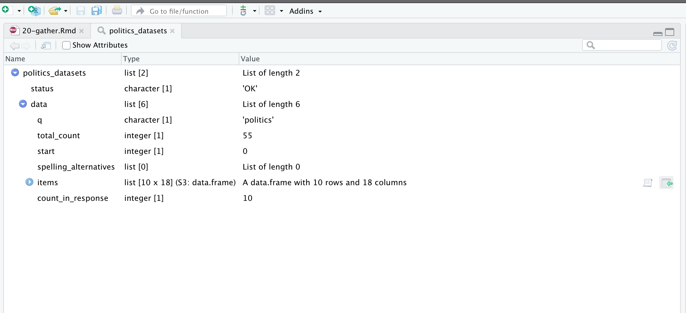
이를 통해 관심 있는 데이터셋을 얻는 방법을 알 수 있습니다.
as_tibble(politics_datasets[["data"]][["items"]])7.2.2 Spotify
때로는 API를 중심으로 구축된 R 패키지가 있어 이전에 본 것과 유사한 방식으로 상호 작용할 수 있습니다. 예를 들어, spotifyr는 Spotify API를 감싸는 래퍼입니다. API를 사용할 때, 심지어 R 패키지(이 경우 spotifyr)로 래핑된 경우에도 접근이 제공되는 조건을 읽는 것이 중요합니다.
Spotify API에 접근하려면 Spotify 개발자 계정이 필요합니다. 이것은 무료이지만 Spotify 계정으로 로그인한 다음 개발자 약관에 동의해야 합니다(그림 fig-spotifyaccept).
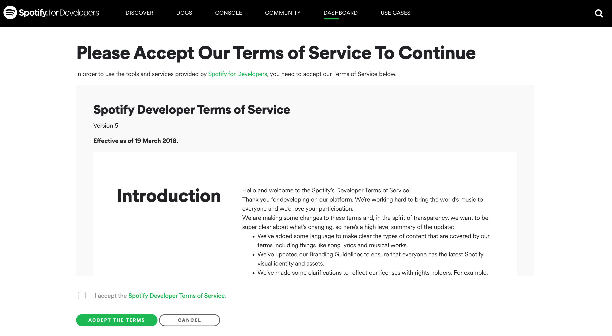
등록 절차를 계속 진행하면, 우리의 경우 무엇을 구축하는지 “모르기” 때문에 Spotify는 비상업적 계약을 사용하도록 요구하며, 이는 괜찮습니다. Spotify API를 사용하려면 “클라이언트 ID”와 “클라이언트 시크릿”이 필요합니다. 이것들은 우리가 비밀로 유지해야 하는 것들입니다. 그렇지 않으면 세부 정보를 아는 누구든지 우리 개발자 계정을 우리인 것처럼 사용할 수 있습니다. 이러한 세부 정보를 최소한의 번거로움으로 비밀로 유지하는 한 가지 방법은 “시스템 환경”에 보관하는 것입니다. 이렇게 하면 GitHub에 푸시할 때 포함되지 않아야 합니다. 이를 위해 usethis를 로드하고 사용하여 시스템 환경을 수정할 것입니다. 특히, “.Renviron”이라는 파일이 있으며, 이를 열고 “클라이언트 ID”와 “클라이언트 시크릿”을 추가할 것입니다.
edit_r_environ()edit_r_environ()을 실행하면 “.Renviron” 파일이 열리고 “Spotify Client ID”와 “Client Secret”을 추가할 수 있습니다. spotifyr가 해당 특정 이름의 키를 환경에서 찾을 것이므로 동일한 이름을 사용하는 것이 중요합니다. 이 책에서는 일반적으로 큰따옴표를 사용하지만 여기서는 작은따옴표를 사용하는 것이 중요합니다.
SPOTIFY_CLIENT_ID = 'PUT_YOUR_CLIENT_ID_HERE'
SPOTIFY_CLIENT_SECRET = 'PUT_YOUR_SECRET_HERE'“.Renviron” 파일을 저장한 다음 R을 다시 시작합니다: “세션” \(\rightarrow\) “R 다시 시작”. 이제 필요에 따라 “Spotify 클라이언트 ID”와 “클라이언트 시크릿”을 사용할 수 있습니다. 그리고 해당 세부 정보를 인수로 요구하는 함수는 명시적으로 다시 지정할 필요 없이 작동할 것입니다.
이를 시도하기 위해 spotifyr를 설치하고 로드합니다. get_artist_audio_features()를 사용하여 영국 록 밴드 라디오헤드에 대한 정보를 가져와 저장할 것입니다. 필요한 인수 중 하나는 authorization이지만, 기본적으로 “.Renviron” 파일을 찾도록 설정되어 있으므로 여기서는 지정할 필요가 없습니다.
radiohead <- get_artist_audio_features("radiohead")
saveRDS(radiohead, "radiohead.rds")radiohead <- readRDS("radiohead.rds")노래를 기반으로 다양한 정보를 사용할 수 있습니다. 시간이 지남에 따라 노래가 길어지는지 여부에 관심이 있을 수 있습니다(그림 fig-readioovertime). sec-static-communication의 지침에 따라 이것은 앨범별 요약 통계를 동시에 전달하기 위해 상자 그림을 추가로 사용할 수 있는 좋은 기회입니다.
radiohead <- as_tibble(radiohead)
radiohead |>
mutate(album_release_date = ymd(album_release_date)) |>
ggplot(aes(
x = album_release_date,
y = duration_ms,
group = album_release_date
)) +
geom_boxplot() +
geom_jitter(alpha = 0.5, width = 0.3, height = 0) +
theme_minimal() +
labs(
x = "앨범 발매일",
y = "노래 길이 (ms)"
)
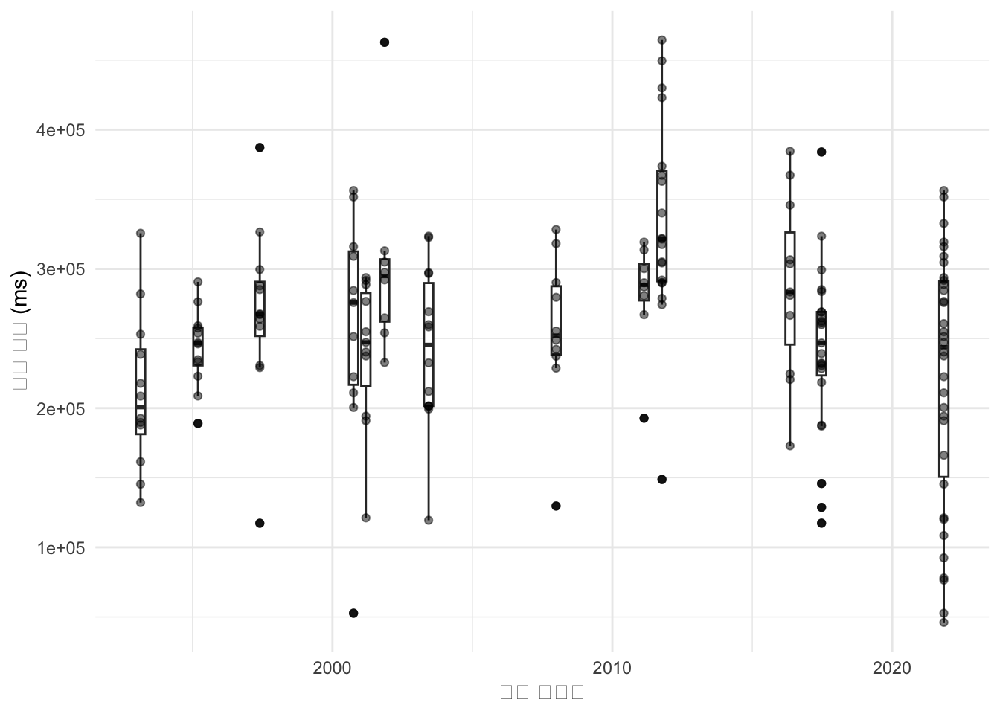
Spotify에서 각 노래에 대해 제공하는 흥미로운 변수 중 하나는 “valence”입니다. Spotify 문서는 이를 0과 1 사이의 척도로 설명하며, 높은 값일수록 더 긍정적인 “음악적 긍정성”을 나타냅니다. 예를 들어, 라디오헤드, 미국 록 밴드 더 내셔널, 미국 가수 테일러 스위프트와 같은 몇몇 아티스트 간의 시간 경과에 따른 valence를 비교하는 데 관심이 있을 수 있습니다.
먼저 데이터를 수집해야 합니다.
taylor_swift <- get_artist_audio_features("taylor swift")
the_national <- get_artist_audio_features("the national")
saveRDS(taylor_swift, "taylor_swift.rds")
saveRDS(the_national, "the_national.rds")그런 다음 그것들을 함께 가져와 그래프를 만들 수 있습니다(그림 fig-swiftyvsnationalvsradiohead). 이것은 테일러 스위프트와 라디오헤드는 시간이 지남에 따라 valence 수준을 대체로 유지했지만, 더 내셔널은 감소했음을 보여주는 것으로 보입니다.
rbind(taylor_swift, the_national, radiohead) |>
select(artist_name, album_release_date, valence) |>
mutate(album_release_date = ymd(album_release_date)) |>
ggplot(aes( x = album_release_date, y = valence, color = artist_name)) +
geom_point(alpha = 0.3) +
geom_smooth() +
theme_minimal() +
facet_wrap(facets = vars(artist_name), dir = "v") +
labs(
x = "앨범 발매일",
y = "Valence",
color = "아티스트"
) +
scale_color_brewer(palette = "Set1") +
theme(legend.position = "bottom")
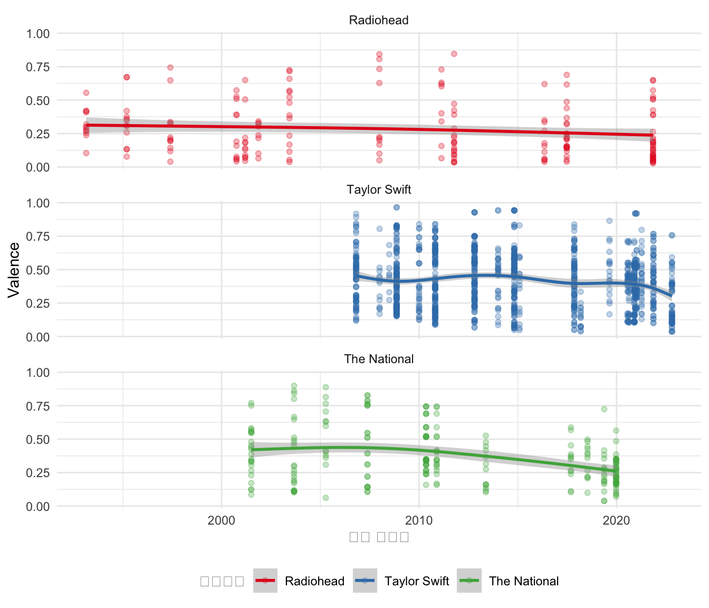
이 모든 정보가 아주 적은 노력과 비용으로 제공되는 세상에 살고 있다는 것이 얼마나 놀라운 일입니까! 그리고 데이터를 수집한 후에는 할 수 있는 일이 많습니다. 예를 들어, (kaylinpavlik는?) 확장된 데이터셋을 사용하여 음악 장르를 분류하고 (theeconomistonspotify는?) 언어가 Spotify에서 음악 스트리밍과 어떻게 관련되어 있는지 살펴봅니다. 이러한 데이터를 수집할 수 있는 능력은 과거에는 실험적으로 고려해야 했던 질문에 답할 수 있게 해줍니다. 예를 들어, (salganik2006experimental은?) 이제 접근할 수 있는 관찰 데이터 대신 실험 데이터를 사용하여 히트곡을 만드는 사회적 측면을 분석해야 했습니다.
그렇긴 하지만, valence가 측정하려는 것이 무엇인지 생각해 볼 가치가 있습니다. Spotify 문서에는 그것이 어떻게 생성되었는지에 대한 정보가 거의 없습니다. 하나의 숫자가 노래의 긍정성을 완전히 나타낼 수 있다는 것은 의심스럽습니다. 그리고 Spotify에 없거나 공개되지 않은 이 아티스트들의 노래는 어떻습니까? 이것은 측정과 표본 추출이 데이터로 이야기를 하는 모든 측면에 어떻게 스며드는지를 보여주는 좋은 예입니다.
7.3 웹 스크래핑
7.3.1 원칙
웹 스크래핑은 웹사이트에서 데이터를 가져오는 방법입니다. 브라우저를 사용하여 웹사이트로 이동한 다음 사본을 저장하는 대신, 우리는 우리를 위해 이 작업을 수행하는 코드를 작성합니다. 이것은 우리에게 상당한 데이터를 열어주지만, 다른 한편으로는 일반적으로 이러한 목적으로 제공되는 데이터가 아닙니다. 이는 존중하는 태도를 갖는 것이 특히 중요하다는 것을 의미합니다. 일반적으로 불법은 아니지만, 웹 스크래핑의 합법성에 대한 구체적인 내용은 관할권과 우리가 무엇을 하는지에 따라 다르므로 주의하는 것이 중요합니다. 우리의 사용이 상업적으로 경쟁적이지 않더라도, 특히 우려되는 것은 우리의 작업이 재현 가능해야 한다는 필요성과 데이터 재게시를 허용하지 않을 수 있는 서비스 약관을 존중해야 한다는 필요성 사이의 갈등입니다(Luscombe, Dick, 와/과 Walby 2021).
개인 정보 보호는 종종 재현성보다 우선합니다. 웹사이트에서 공개적으로 사용 가능한 데이터와 스크래핑, 정리 및 데이터셋으로 준비된 다음 공개적으로 출시되는 데이터 사이에는 상당한 차이가 있습니다. 예를 들어, (kirkegaard2016okcupid는?) 공개적으로 사용 가능한 OKCupid 프로필을 스크래핑한 다음 결과 데이터셋을 쉽게 사용할 수 있도록 했습니다(Hackett 2016). (zimmer2018addressing은?) “피해 최소화”, “정보에 입각한 동의”, 그리고 데이터셋에 있는 사람들이 “개인 정보 및 기밀 유지”를 유지하도록 보장하는 것을 포함하여 간과된 몇 가지 중요한 고려 사항을 자세히 설명합니다. OKCupid가 데이터를 공개했다고 말하는 것이 옳지만, 그들은 특정 맥락에서 그렇게 했고, 그들의 데이터가 스크래핑되었을 때 그 맥락이 변경되었습니다.
아, 그것에 대해 좋은 데이터가 있다고 생각하는군요!
경찰 폭력은 경찰과 사회 간의 신뢰가 필요하기 때문에 특히 우려됩니다. 좋은 데이터 없이는 경찰 부서에 책임을 묻거나 문제가 있는지 알기 어렵지만, 데이터를 얻는 것은 어렵습니다(Thomson-DeVeaux, Bronner, 와/과 Sharma 2021). 근본적인 문제는 폭력으로 이어지는 만남을 데이터셋으로 쉽게 단순화할 방법이 없다는 것입니다. 두 가지 인기 있는 데이터셋은 웹 스크래핑을 기반으로 합니다.
- “경찰 폭력 매핑”; 그리고
- “치명적인 무력 데이터베이스”.
(Bor2018은?) “경찰 폭력 매핑”을 사용하여 비무장 흑인 미국인에 대한 경찰 살해를 조사하고 흑인 미국인의 정신 건강에 상당한 영향을 미친다는 것을 발견했습니다. (Nix2020과?) 같은 논문에 대한 응답은 데이터셋의 코딩에 특별한 우려를 표명하고 재코딩 후 다른 결론을 도출합니다. 코딩 차이의 예는 맥락과 사용법에 따라 달라지기 때문에 답할 수 없는 질문입니다. 즉, 장난감 총기로 살해된 개인을 “무장”으로 코딩해야 할까요, 아니면 “비무장”으로 코딩해야 할까요? 우리는 별도의 범주를 원할 수 있지만, 정량적 데이터셋을 구성하려면 어느 정도의 단순화가 필요합니다. 워싱턴 포스트는 “치명적인 무력 데이터베이스”를 사용하여 많은 기사를 작성합니다(The Washington Post 2023). (washpostfatalforcemethods는?) 그들의 방법론과 표준화의 어려움을 설명합니다. (Comer2022는?) 데이터셋을 비교하고 유사점을 찾지만, 데이터셋이 다른 방식을 문서화합니다.
웹 스크래핑은 귀중한 데이터 소스입니다. 그러나 일반적으로 다른 목표를 달성하려는 시도의 부산물로 생성될 수 있는 데이터셋입니다. 그리고 웹 스크래핑은 웹사이트 호스트에 비용을 부과하므로 가능한 한 이를 줄여야 합니다. 예를 들어, 소매업체는 제품과 가격이 있는 웹사이트를 가질 수 있습니다. 이것은 의도적으로 데이터 소스로 생성된 것이 아니지만, 우리는 그것을 스크래핑하여 데이터셋을 만들 수 있습니다. 다음 원칙은 웹 스크래핑을 안내하는 데 유용할 수 있습니다.
- 피하십시오. 가능한 한 API를 사용하십시오.
- 그들의 요구를 따르십시오. 일부 웹사이트에는 스크래퍼가 무엇을 하는 것을 편안하게 생각하는지에 대한 정보가 포함된 “robots.txt” 파일이 있습니다. 일반적으로 “robots.txt” 파일은 기본 URL에 “robots.txt”를 추가하여 접근할 수 있습니다. 예를 들어, https://www.google.com의 “robots.txt” 파일은 https://www.google.com/robots.txt에서 접근할 수 있습니다. “Disallow:”에 나열된 폴더가 있는지 확인하십시오. 이들은 웹사이트가 스크래핑되기를 원하지 않는 폴더입니다. 그리고 “Crawl-delay:”의 모든 인스턴스를 확인하십시오. 이것은 웹사이트가 방문 사이에 기다리기를 원하는 초 수입니다.
- 영향을 줄이십시오.
- 스크래퍼 속도를 늦추십시오. 예를 들어, 웹사이트를 매초 방문하게 하는 대신
sys.sleep()을 사용하여 속도를 늦추십시오. 몇 백 개의 파일만 필요하다면 밤새 백그라운드에서 분당 몇 번만 웹사이트를 방문하게 하는 것은 어떻습니까? - 스크래퍼를 실행하는 시기를 고려하십시오. 예를 들어, 소매업체를 스크래핑하는 경우 고객이 사이트를 덜 사용하는 밤 10시부터 아침까지 스크립트를 실행하도록 설정할 수 있습니다. 마찬가지로, 정부 웹사이트이고 정기적인 월별 출시가 있다면 그 날을 피하는 것이 예의일 수 있습니다.
- 스크래퍼 속도를 늦추십시오. 예를 들어, 웹사이트를 매초 방문하게 하는 대신
- 필요한 것만 가져가십시오. 예를 들어, 크로아티아의 10대 도시 이름만 필요하다면 위키피디아 전체를 스크래핑할 필요는 없습니다. 이것은 웹사이트에 미치는 영향을 줄이고, 우리의 행동을 더 쉽게 정당화할 수 있게 해줍니다.
- 한 번만 스크래핑하십시오. 즉, 스크래퍼가 언젠가 실패할 경우 데이터를 다시 수집할 필요가 없도록 모든 것을 진행하면서 저장해야 합니다. 예를 들어, 일반적으로 한 페이지에서 스크래퍼를 작동시키는 데 상당한 시간을 소비하지만, 일반적으로 페이지 구조가 언젠가 변경되고 스크래퍼를 업데이트해야 할 것입니다. 데이터를 얻은 후에는 원본, 편집되지 않은 데이터를 수정된 데이터와 별도로 저장해야 합니다. 시간이 지남에 따라 데이터가 필요하다면 다시 돌아가야 하지만, 이것은 불필요하게 페이지를 다시 스크래핑하는 것과는 다릅니다.
- 스크래핑된 페이지를 재게시하지 마십시오(이것은 생성한 데이터셋과 대조됩니다).
- 소유권을 가지고 가능하면 허락을 구하십시오. 최소한 모든 스크립트에는 연락처 정보가 포함되어야 합니다. 상황에 따라 스크래핑하기 전에 허락을 구하는 것이 가치가 있을 수 있습니다.
7.3.2 HTML/CSS 필수 사항
웹 스크래핑은 웹페이지의 기본 구조를 활용하여 가능합니다. 우리는 HTML/CSS의 패턴을 사용하여 원하는 데이터를 가져옵니다. 기본 HTML/CSS를 보려면 다음을 수행할 수 있습니다.
- 브라우저를 열고 마우스 오른쪽 버튼을 클릭한 다음 “검사”와 같은 것을 선택합니다. 또는
- 웹사이트를 저장한 다음 브라우저 대신 텍스트 편집기로 엽니다.
HTML/CSS는 일치하는 태그를 기반으로 하는 마크업 언어입니다. 텍스트를 굵게 표시하려면 다음과 같이 사용합니다.
<b>내 굵은 텍스트</b>마찬가지로, 목록을 원하면 목록을 시작하고 끝내고 각 항목을 나타냅니다.
<ul>
<li>웹 스크래핑 배우기</li>
<li>데이터 과학하기</li>
<li>수익 창출하기</li>
</ul>스크래핑할 때 이러한 태그를 검색할 것입니다.
시작하려면 웹사이트에서 HTML을 얻었다고 가정하고, 거기서 이름을 가져오고 싶다고 가정해 봅시다. 이름이 굵게 표시되어 있으므로 해당 기능을 중심으로 추출하고 싶습니다.
website_extract <- "<p>안녕하세요, 저는 <b>로한</b> 알렉산더입니다.</p>"rvest는 tidyverse의 일부이므로 설치할 필요는 없지만, 핵심 부분은 아니므로 로드해야 합니다. 그 후 read_html()을 사용하여 데이터를 읽어들입니다.
rohans_data <- read_html(website_extract)
rohans_data{html_document}
<html>
[1] <body><p>안녕하세요, 저는 <b>로한</b> 알렉산더입니다.</p></body>rvest가 태그를 찾는 데 사용하는 언어는 “node”이므로 굵은 노드에 집중합니다. 기본적으로 html_elements()는 태그도 반환합니다. html_text()로 텍스트를 추출합니다.
rohans_data |>
html_elements("b"){xml_nodeset (1)}
[1] <b>로한</b>rohans_data |>
html_elements("b") |>
html_text()[1] "로한"웹 스크래핑은 흥미로운 데이터 소스이며, 이제 몇 가지 예시를 살펴보겠습니다. 그러나 이러한 예시와 달리 정보는 일반적으로 한 페이지에 모두 있지 않습니다. 웹 스크래핑은 연습이 필요한 어려운 예술 형식으로 빠르게 변합니다. 예를 들어, 인덱스 스크래핑과 콘텐츠 스크래핑을 구별합니다. 전자는 원하는 콘텐츠가 있는 URL 목록을 구축하기 위한 스크래핑이고, 후자는 해당 URL에서 콘텐츠를 가져오기 위한 스크래핑입니다. (luscombe2022jumpstarting에서?) 예시를 제공합니다. 웹 스크래핑을 많이 하게 된다면 polite(Perepolkin 2022)가 워크플로를 더 잘 최적화하는 데 도움이 될 수 있습니다. 그리고 GitHub Actions를 사용하여 시간이 지남에 따라 더 크고 느린 스크래핑을 허용할 수 있습니다.
7.3.3 도서 정보
이 사례 연구에서는 여기에서 사용 가능한 도서 목록을 스크래핑할 것입니다. 그런 다음 데이터를 정리하고 저자 성의 첫 글자 분포를 살펴볼 것입니다. 위 예시보다 약간 더 복잡하지만, 기본 워크플로는 동일합니다. 웹사이트를 다운로드하고, 관심 있는 노드를 찾고, 정보를 추출하고, 정리합니다.
rvest를 사용하여 웹사이트를 다운로드하고, HTML을 탐색하여 관심 있는 측면을 찾습니다. 그리고 tidyverse를 사용하여 데이터셋을 정리합니다. 먼저 웹사이트로 이동한 다음 로컬 사본을 저장해야 합니다.
books_data <- read_html("https://rohansbooks.com")
write_html(books_data, "raw_data.html")원하는 측면을 얻기 위해 HTML을 탐색해야 합니다. 그리고 가능한 한 빨리 데이터를 티블로 가져오려고 노력해야 합니다. 이렇게 하면 dplyr 동사 및 tidyverse의 다른 함수를 더 쉽게 사용할 수 있습니다.
익숙하지 않다면 온라인 부록 sec-r-essentials을 참조하십시오.
books_data <- read_html("raw_data.html")books_data{html_document}
<html>
[1] <head>\n<meta http-equiv="Content-Type" content="text/html; charset=UTF-8 ...
[2] <body>\n <h1>Books</h1>\n\n <p>\n This is a list of books that ...데이터를 티블로 가져오려면 먼저 HTML 태그를 사용하여 관심 있는 데이터를 식별해야 합니다. 웹사이트를 보면 목록 항목에 집중해야 한다는 것을 알 수 있습니다(그림 fig-rohansbooks-display). 그리고 소스를 보면 특히 목록을 찾을 수 있습니다(그림 fig-rohansbooks-html).
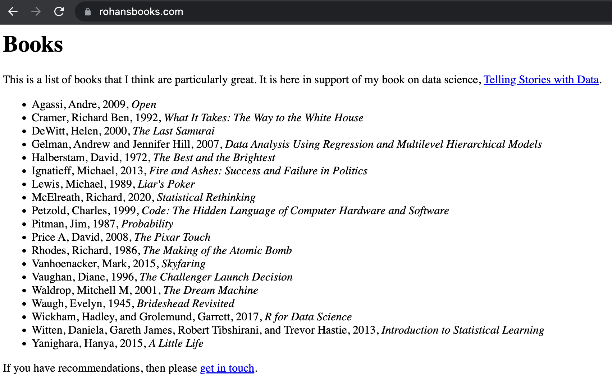
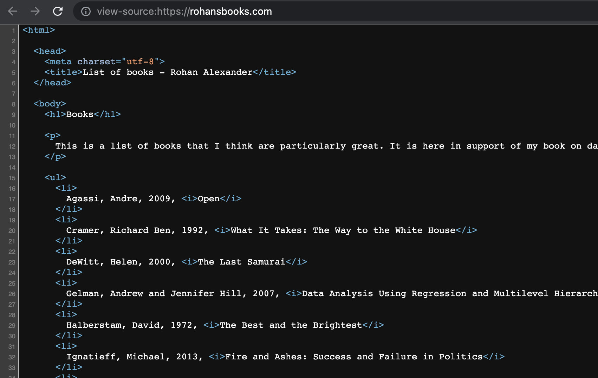
목록 항목의 태그는 “li”이므로 이를 사용하여 목록에 집중할 수 있습니다.
text_data <-
books_data |>
html_elements("li") |>
html_text()
all_books <-
tibble(books = text_data)
head(all_books)# A tibble: 6 × 1
books
<chr>
1 "\n Agassi, Andre, 2009, Open\n "
2 "\n Cramer, Richard Ben, 1992, What It Takes: The Way to the White Hou…
3 "\n DeWitt, Helen, 2000, The Last Samurai\n "
4 "\n Gelman, Andrew and Jennifer Hill, 2007, Data Analysis Using Regres…
5 "\n Halberstam, David, 1972, The Best and the Brightest\n "
6 "\n Ignatieff, Michael, 2013, Fire and Ashes: Success and Failure in P…이제 데이터를 정리해야 합니다. 먼저 separate()를 사용하여 제목과 저자를 분리한 다음 저자 및 제목 열을 정리합니다. 연도가 존재한다는 사실을 활용하여 연도를 기준으로 분리할 수 있습니다.
all_books <-
all_books |>
mutate(books = str_squish(books)) |>
separate(books, into = c("author", "title"), sep = "\\, [[:digit:]]{4}\\, ")
head(all_books)# A tibble: 6 × 2
author title
<chr> <chr>
1 Agassi, Andre Open
2 Cramer, Richard Ben What It Takes: The Way to the White House
3 DeWitt, Helen The Last Samurai
4 Gelman, Andrew and Jennifer Hill Data Analysis Using Regression and Multileve…
5 Halberstam, David The Best and the Brightest
6 Ignatieff, Michael Fire and Ashes: Success and Failure in Polit…마지막으로, 예를 들어 이름의 첫 글자 분포에 대한 표를 만들 수 있습니다(표 tbl-lettersofbooks).
all_books |>
mutate(
first_letter = str_sub(author, 1, 1)
) |>
count(.by = first_letter) |>
tt() |>
style_tt(j = 1:2, align = "lr") |>
format_tt(digits = 0, num_mark_big = ",", num_fmt = "decimal") |>
setNames(c("첫 글자", "횟수"))| 첫 글자 | 횟수 |
|---|---|
| A | 1 |
| C | 1 |
| D | 1 |
| G | 1 |
| H | 1 |
| I | 1 |
| L | 1 |
| M | 1 |
| P | 3 |
| R | 1 |
| V | 2 |
| W | 4 |
| Y | 1 |
7.3.4 영국 총리
이 사례 연구에서는 영국 총리가 태어난 해를 기준으로 얼마나 오래 살았는지에 관심이 있습니다. rvest를 사용하여 위키피디아에서 데이터를 스크래핑하고, 정리한 다음 그래프를 만들 것입니다. 때때로 웹사이트가 변경됩니다. 이로 인해 많은 스크래핑이 대부분 맞춤형이 되지만, 이전 프로젝트의 일부 코드를 빌릴 수는 있습니다. 때때로 좌절감을 느끼는 것은 정상입니다. 끝을 염두에 두고 시작하는 것이 도움이 됩니다.
이를 위해 먼저 시뮬레이션된 데이터를 생성할 수 있습니다. 이상적으로는 각 총리에 대한 행, 이름에 대한 열, 출생 및 사망 연도에 대한 열이 있는 표를 원합니다. 아직 살아 있다면 사망 연도는 비어 있을 수 있습니다. 출생 및 사망 연도는 1700년에서 1990년 사이여야 하며, 사망 연도는 출생 연도보다 커야 한다는 것을 알고 있습니다. 마지막으로, 연도는 정수여야 하고 이름은 문자여야 한다는 것도 알고 있습니다. 대략 다음과 같이 생긴 것을 원합니다.
set.seed(853)
simulated_dataset <-
tibble(
prime_minister = babynames |>
filter(prop > 0.01) |>
distinct(name) |>
unlist() |>
sample(size = 10, replace = FALSE),
birth_year = sample(1700:1990, size = 10, replace = TRUE),
years_lived = sample(50:100, size = 10, replace = TRUE),
death_year = birth_year + years_lived
) |>
select(prime_minister, birth_year, death_year, years_lived) |>
arrange(birth_year)
simulated_dataset# A tibble: 10 × 4
prime_minister birth_year death_year years_lived
<chr> <int> <int> <int>
1 Kevin 1813 1908 95
2 Karen 1832 1896 64
3 Robert 1839 1899 60
4 Bertha 1846 1915 69
5 Jennifer 1867 1943 76
6 Arthur 1892 1984 92
7 Donna 1907 2006 99
8 Emma 1957 2031 74
9 Ryan 1959 2053 94
10 Tyler 1990 2062 72시뮬레이션된 데이터셋을 생성하는 장점 중 하나는 그룹으로 작업하는 경우 한 사람이 시뮬레이션된 데이터셋을 사용하여 그래프를 만들기 시작할 수 있고, 다른 사람은 데이터를 수집할 수 있다는 것입니다. 그래프 측면에서 우리는 그림 fig-pmsgraphexample과 같은 것을 목표로 합니다.
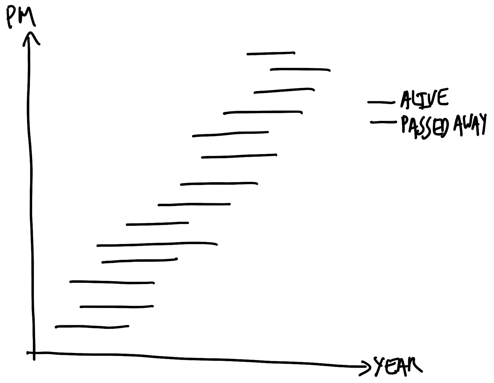
우리는 영국 총리가 얼마나 오래 살았는지에 대한 흥미로운 질문으로 시작합니다. 따라서 데이터 소스를 식별해야 합니다. 각 총리의 출생 및 사망 정보를 가진 데이터 소스는 많지만, 우리는 신뢰할 수 있는 것을 원하며, 스크래핑할 것이므로 어느 정도 구조가 있는 것을 원합니다. 영국 총리에 대한 위키피디아 페이지는 이 두 가지 기준을 모두 충족합니다. 인기 있는 페이지이므로 정보가 정확할 가능성이 높고, 데이터는 표 형식으로 제공됩니다.
rvest를 로드한 다음 read_html()을 사용하여 페이지를 다운로드합니다. 로컬에 저장하면 웹사이트가 변경될 경우 재현성을 위해 필요한 사본을 제공하고, 웹사이트를 계속 방문할 필요가 없습니다. 그러나 우리의 것이 아니므로 일반적으로 공개적으로 재배포해서는 안 됩니다.
raw_data <-
read_html(
"https://en.wikipedia.org/wiki/List_of_prime_ministers_of_the_United_Kingdom"
)
write_html(raw_data, "pms.html")이전 사례 연구와 마찬가지로, 우리는 원하는 데이터에 더 가까이 다가가는 데 도움이 될 수 있는 HTML의 패턴을 찾고 있습니다. 이것은 반복적인 과정이며 시행착오를 포함합니다. 간단한 예시조차도 시간이 걸릴 것입니다.
도움이 될 수 있는 도구 중 하나는 SelectorGadget입니다. 이를 통해 원하는 요소를 선택하고 html_element()에 대한 입력을 제공할 수 있습니다(그림 fig-selectorgadget). 기본적으로 SelectorGadget은 CSS 선택자를 사용합니다. 이것이 원하는 정보의 위치를 지정하는 유일한 방법은 아니며, XPath와 같은 대안을 사용하는 것도 고려할 수 있는 유용한 옵션입니다.
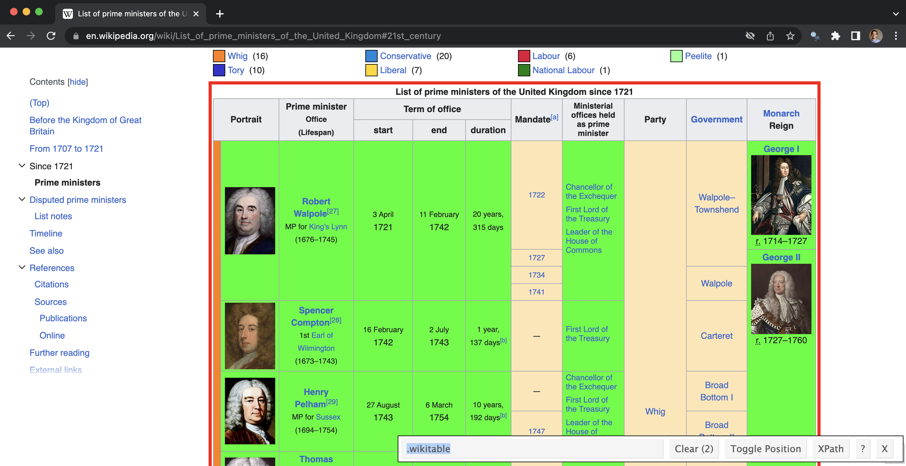
raw_data <- read_html("pms.html")parse_data_selector_gadget <-
raw_data |>
html_element(".wikitable") |>
html_table()
head(parse_data_selector_gadget)# A tibble: 6 × 11
Portrait Portrait Prime ministerOffice(L…¹ `Term of office` `Term of office`
<chr> <chr> <chr> <chr> <chr>
1 Portrait "Portrait" Prime ministerOffice(Li… start end
2 "" Robert Walpole[27]MP fo… 3 April1721 11 February1742
3 "" Robert Walpole[27]MP fo… 3 April1721 11 February1742
4 "" Robert Walpole[27]MP fo… 3 April1721 11 February1742
5 "" Robert Walpole[27]MP fo… 3 April1721 11 February1742
6 "" Spencer Compton[28]1st … 16 February1742 2 July1743
# ℹ abbreviated name: ¹`Prime ministerOffice(Lifespan)`
# ℹ 6 more variables: `Term of office` <chr>, `Mandate[a]` <chr>,
# `Ministerial offices held as prime minister` <chr>, Party <chr>,
# Government <chr>, MonarchReign <chr>이 경우 필요 없는 열이 많고 중복된 행도 있습니다.
parsed_data <-
parse_data_selector_gadget |>
clean_names() |>
rename(raw_text = prime_minister_office_lifespan) |>
select(raw_text) |>
filter(raw_text != "Prime ministerOffice(Lifespan)") |>
distinct()
head(parsed_data)# A tibble: 6 × 1
raw_text
<chr>
1 Robert Walpole[27]MP for King's Lynn(1676–1745)
2 Spencer Compton[28]1st Earl of Wilmington(1673–1743)
3 Henry Pelham[29]MP for Sussex(1694–1754)
4 Thomas Pelham-Holles[30]1st Duke of Newcastle(1693–1768)
5 William Cavendish[31]4th Duke of Devonshire(1720–1764)
6 Thomas Pelham-Holles[32]1st Duke of Newcastle(1693–1768)이제 파싱된 데이터를 원하는 대로 정리해야 합니다. 이름 열과 출생 연도 및 사망 연도 열을 원합니다. 괄호로 이름과 날짜가 구분되어 있다는 사실을 활용하기 위해 separate()를 사용합니다. str_extract()의 인수는 정규 표현식입니다. 이는 네 자리 숫자, 대시, 다시 네 자리 숫자를 찾습니다. 아직 살아 있는 총리의 경우 약간 다른 정규 표현식을 사용합니다.
initial_clean <-
parsed_data |>
separate(
raw_text, into = c("name", "not_name"), sep = "\\[", extra = "merge",
) |>
mutate(date = str_extract(not_name, "[[:digit:]]{4}–[[:digit:]]{4}"),
born = str_extract(not_name, "born[[:space:]][[:digit:]]{4}")
) |>
select(name, date, born)
head(initial_clean)# A tibble: 6 × 3
name date born
<chr> <chr> <chr>
1 Robert Walpole 1676–1745 <NA>
2 Spencer Compton 1673–1743 <NA>
3 Henry Pelham 1694–1754 <NA>
4 Thomas Pelham-Holles 1693–1768 <NA>
5 William Cavendish 1720–1764 <NA>
6 Thomas Pelham-Holles 1693–1768 <NA> 마지막으로 열을 정리해야 합니다.
cleaned_data <-
initial_clean |>
separate(date, into = c("birth", "died"),
sep = "–") |> # 사망한 총리는 출생 및 사망 연도가 하이픈으로 구분되지만, 하이픈이 약간 이상한 유형이므로 복사/붙여넣기해야 합니다.
mutate(
born = str_remove_all(born, "born[[:space:]]"),
birth = if_else(!is.na(born), born, birth)
) |> # 살아있는 총리는 형식이 약간 다릅니다.
select(-born) |>
rename(born = birth) |>
mutate(across(c(born, died), as.integer)) |>
mutate(Age_at_Death = died - born) |>
distinct() # 일부 총리는 두 번 시도했습니다.
head(cleaned_data)# A tibble: 6 × 4
name born died Age_at_Death
<chr> <int> <int> <int>
1 Robert Walpole 1676 1745 69
2 Spencer Compton 1673 1743 70
3 Henry Pelham 1694 1754 60
4 Thomas Pelham-Holles 1693 1768 75
5 William Cavendish 1720 1764 44
6 John Stuart 1713 1792 79우리의 데이터셋은 처음에 원했던 것과 비슷하게 보입니다(표 tbl-canadianpmscleanddata).
cleaned_data |>
head() |>
tt() |>
style_tt(j = 1:4, align = "lrrr") |>
setNames(c("총리", "출생 연도", "사망 연도", "사망 시 나이"))| 총리 | 출생 연도 | 사망 연도 | 사망 시 나이 |
|---|---|---|---|
| Robert Walpole | 1676 | 1745 | 69 |
| Spencer Compton | 1673 | 1743 | 70 |
| Henry Pelham | 1694 | 1754 | 60 |
| Thomas Pelham-Holles | 1693 | 1768 | 75 |
| William Cavendish | 1720 | 1764 | 44 |
| John Stuart | 1713 | 1792 | 79 |
이 시점에서 우리는 각 총리가 얼마나 오래 살았는지 보여주는 그래프를 만들고 싶습니다(그림 fig-pmslives). 아직 살아 있다면 끝까지 표시하고 싶지만, 색깔을 다르게 하고 싶습니다.
cleaned_data |>
mutate(
still_alive = if_else(is.na(died), "Yes", "No"),
died = if_else(is.na(died), as.integer(2023), died)
) |>
mutate(name = as_factor(name)) |>
ggplot(
aes(x = born, xend = died, y = name, yend = name, color = still_alive)
) +
geom_segment() +
labs(
x = "출생 연도", y = "총리", color = "총리는 현재 살아있음"
) +
theme_minimal() +
scale_color_brewer(palette = "Set1") +
theme(legend.position = "bottom")
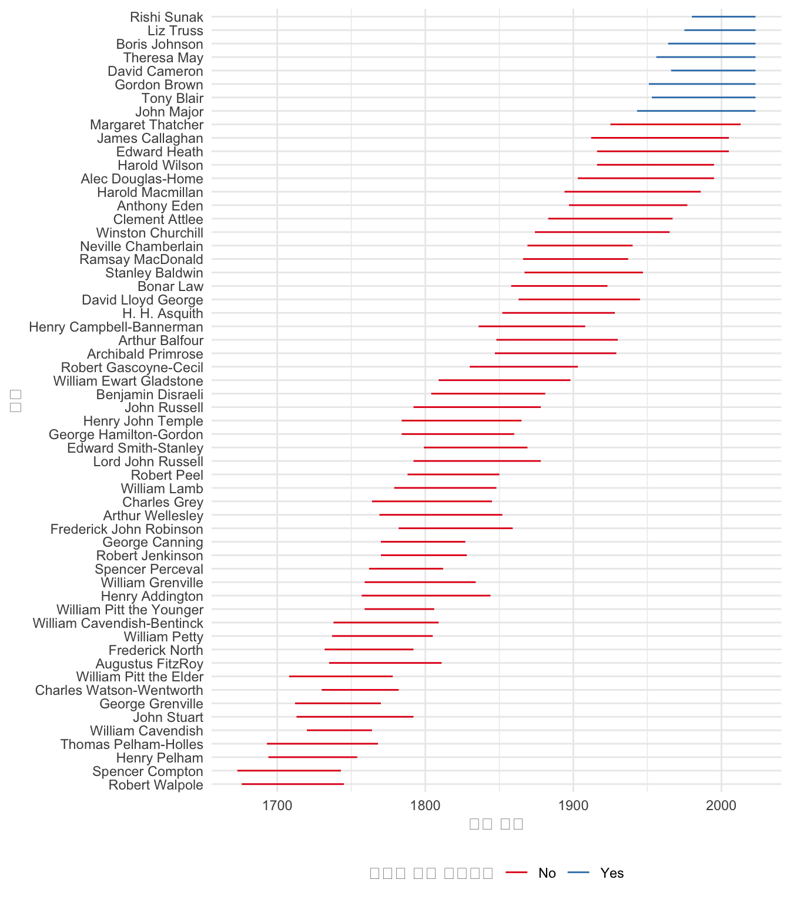
7.3.5 반복
텍스트를 데이터로 간주하는 것은 흥미롭고 다양한 연구 질문을 탐색할 수 있게 해줍니다. sec-text-as-data에서 이를 활용할 것입니다. 많은 가이드에서는 이미 잘 형식화된 텍스트 데이터셋이 있다고 가정하지만, 실제로는 거의 그렇지 않습니다. 이 사례 연구에서는 몇 개의 다른 페이지에서 파일을 다운로드할 것입니다. 웹 스크래핑의 두 가지 예시를 이미 보았지만, 그것들은 한 페이지에만 초점을 맞추었지만, 우리는 종종 많은 페이지가 필요합니다. 여기서는 이 반복에 초점을 맞출 것입니다. download.file()를 사용하여 다운로드를 수행하고, purrr를 사용하여 여러 사이트에 이 함수를 적용할 것입니다. purrr는 핵심 tidyverse의 일부이므로 설치하거나 로드할 필요가 없습니다. tidyverse를 로드하면 로드됩니다.
호주 중앙은행(RBA)은 호주의 중앙은행입니다. 현금 금리를 설정할 책임이 있으며, 이는 은행 간 대출에 사용되는 이자율입니다. 이 이자율은 특히 중요하며 경제의 다른 이자율에 큰 영향을 미칩니다. RBA는 1년에 네 번(2월, 5월, 8월, 11월) 통화 정책 성명을 발표하며, 이들은 PDF로 제공됩니다. 이 예시에서는 2023년에 발표된 두 가지 성명을 다운로드할 것입니다.
먼저 필요한 정보가 있는 티블을 설정합니다. URL 구조의 공통점을 활용할 것입니다. 각 상태에 대해 URL과 로컬 파일 이름을 모두 지정해야 합니다.
first_bit <- "https://www.rba.gov.au/publications/smp/2023/"
last_bit <- "/pdf/overview.pdf"
statements_of_interest <-
tibble(
address =
c(
paste0(first_bit, "feb", last_bit),
paste0(first_bit, "may", last_bit)
),
local_save_name = c("2023-02.pdf", "2023-05.pdf")
)statements_of_interest# A tibble: 2 × 2
address local_save_name
<chr> <chr>
1 https://www.rba.gov.au/publications/smp/2023/feb/pdf/overview… 2023-02.pdf
2 https://www.rba.gov.au/publications/smp/2023/may/pdf/overview… 2023-05.pdf 이 두 성명에 download.files() 함수를 적용하고 싶습니다. 이를 위해 파일을 다운로드하고, 다운로드되었음을 알려주고, 정중하게 잠시 기다린 다음 다음 파일을 가져오는 함수를 작성합니다.
visit_download_and_wait <-
function(address_to_visit,
where_to_save_it_locally) {
download.file(url = address_to_visit,
destfile = where_to_save_it_locally)
print(paste("완료:", address_to_visit, "시간:", Sys.time()))
Sys.sleep(sample(5:10, 1))
}이제 walk2() 함수를 사용하여 URL 및 저장 이름 티블에 해당 함수를 적용합니다.
walk2(
statements_of_interest$address,
statements_of_interest$local_save_name,
~ visit_download_and_wait(.x, .y)
)그 결과, 이 PDF들을 다운로드하여 컴퓨터에 저장했습니다. 이러한 함수를 직접 작성하는 대신 heapsofpapers(Alexander 와/과 Mahfouz 2021)를 사용할 수도 있습니다. 여기에는 특히 PDF, CSV, txt 파일과 같은 파일 목록을 다운로드하는 데 유용한 다양한 옵션이 포함되어 있습니다. 예를 들어, (collinsalexander는?) 이를 사용하여 수천 개의 PDF를 얻고 COVID-19 연구가 재현 가능한 정도를 추정합니다. 다음 섹션에서는 이를 기반으로 PDF에서 정보를 가져오는 것에 대해 논의할 것입니다.
7.4 PDF
PDF 파일은 1990년대에 기술 회사 Adobe에 의해 개발되었습니다. 문서에 유용합니다. 왜냐하면 그것들을 생성한 환경이나 보고 있는 환경에 관계없이 일관된 방식으로 표시되도록 의도되었기 때문입니다. iPhone에서 보는 PDF는 Android 폰에서 보는 것과 동일하게 보여야 하며, Linux 데스크톱에서도 마찬가지입니다. PDF의 한 가지 특징은 텍스트, 사진, 그림 등 다양한 개체를 포함할 수 있다는 것입니다. 그러나 이러한 다양성은 PDF가 데이터로 직접 사용될 수 있는 능력을 제한할 수 있습니다. 데이터는 먼저 PDF에서 추출되어야 합니다.
PDF에서 데이터를 복사하여 붙여넣는 것이 종종 가능합니다. 이는 PDF에 텍스트 또는 일반 테이블만 포함된 경우 더 가능성이 높습니다. 특히, PDF가 Microsoft Word와 같은 응용 프로그램 또는 다른 문서 또는 양식 생성 시스템에 의해 생성된 경우, 텍스트 데이터는 PDF 내에 실제로 텍스트로 저장되어 있기 때문에 종종 이러한 방식으로 추출될 수 있습니다. 우리는 그 경우부터 시작합니다. 그러나 텍스트가 이미지로 저장되어 PDF의 일부인 경우에는 쉽지 않습니다. 이는 실제 문서의 스캔 또는 사진을 통해 생성된 PDF 및 일부 오래된 문서 준비 소프트웨어의 경우일 수 있습니다. 우리는 나중에 그 경우를 살펴봅니다.
API와 달리 PDF는 일반적으로 컴퓨터 소비가 아닌 인간 소비를 위해 생산됩니다. PDF의 좋은 점은 정적이고 일정하다는 것입니다. 그리고 데이터가 사용 가능하다는 것은 훌륭합니다. 그러나 절충안은 다음과 같습니다.
- 대규모 데이터 작업을 하는 데는 그다지 유용하지 않습니다.
- PDF가 어떻게 구성되었는지 알 수 없으므로 신뢰할 수 있는지 알 수 없습니다.
- 데이터를 조작하여 관심 있는 결과를 얻을 수 없습니다.
PDF에서 데이터를 추출할 때 명심해야 할 두 가지 중요한 측면은 다음과 같습니다.
- 끝을 염두에 두고 시작하십시오. 시간 낭비를 줄이기 위해 최종 데이터셋/그래프/논문에서 원하는 것을 계획하고 스케치하십시오.
- 작게 시작한 다음 반복하십시오. 복잡해야 하는 것을 만드는 가장 빠른 방법은 종종 먼저 간단한 버전을 만든 다음 추가하는 것입니다. PDF의 한 페이지 또는 한 줄만 작동하도록 시도하는 것으로 시작하십시오. 그런 다음 거기서부터 반복하십시오.
몇 가지 예시를 살펴본 다음, 미국 총 출산율(TFR)에 대한 데이터를 수집하는 사례 연구를 살펴볼 것입니다.
7.4.1 제인 에어
그림 fig-firstpdfexample는 샬럿 브론테의 소설 제인 에어의 첫 문장만으로 구성된 PDF입니다. 프로젝트 구텐베르크에서 가져왔습니다(Brontë 1847). 여기에서 얻을 수 있습니다. “first_example.pdf”로 저장되었다고 가정하면, pdftools를 설치하고 로드한 후 이 한 페이지 PDF에서 텍스트를 R로 가져올 수 있습니다.
first_example <- pdf_text("first_example.pdf")
first_example
class(first_example)[1] "There was no possibility of taking a walk that day.\n"[1] "character"PDF가 문자 벡터로 올바르게 읽혔음을 알 수 있습니다.
이제 제인 에어의 처음 몇 단락으로 구성된 약간 더 복잡한 예시를 시도할 것입니다(그림 fig-secondpdfexample). 이제 장 제목도 있습니다.
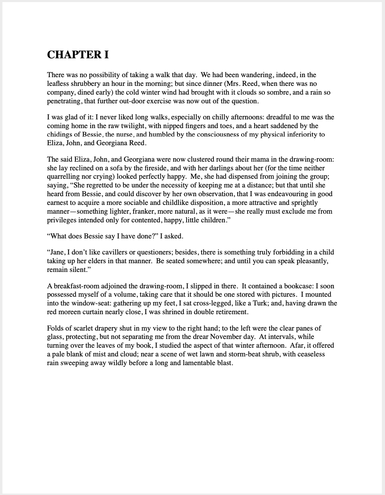
이전과 동일한 함수를 사용합니다.
second_example <- pdf_text("second_example.pdf")
class(second_example)
second_example[1] "character"[1] "CHAPTER I\nThere was no possibility of taking a walk that day. We had been wandering, indeed, in the\nleafless shrubbery an hour in the morning; but since dinner (Mrs. Reed, when there was no\ncompany, dined early) the cold winter wind had brought with it clouds so sombre, and a rain so\npenetrating, that further out-door exercise was now out of the question.\n\nI was glad of it: I never liked long walks, especially on chilly afternoons: dreadful to me was the\ncoming home in the raw twilight, with nipped fingers and toes, and a heart saddened by the\nchidings of Bessie, the nurse, and humbled by the consciousness of my physical inferiority to\nEliza, John, and Georgiana Reed.\n\nThe said Eliza, John, and Georgiana were now clustered round their mama in the drawing-room:\nshe lay reclined on a sofa by the fireside, and with her darlings about her (for the time neither\nquarrelling nor crying) looked perfectly happy. Me, she had dispensed from joining the group;\nsaying, “She regretted to be under the necessity of keeping me at a distance; but that until she\nheard from Bessie, and could discover by her own observation, that I was endeavouring in good\nearnest to acquire a more sociable and childlike disposition, a more attractive and sprightly\nmanner—something lighter, franker, more natural, as it were—she really must exclude me from\nprivileges intended only for contented, happy, little children.”\n\n“What does Bessie say I have done?” I asked.\n\n“Jane, I don’t like cavillers or questioners; besides, there is something truly forbidding in a child\ntaking up her elders in that manner. Be seated somewhere; and until you can speak pleasantly,\nremain silent.”\n\nA breakfast-room adjoined the drawing-room, I slipped in there. It contained a bookcase: I soon\npossessed myself of a volume, taking care that it should be one stored with pictures. I mounted\ninto the window-seat: gathering up my feet, I sat cross-legged, like a Turk; and, having drawn the\nred moreen curtain nearly close, I was shrined in double retirement.\n\nFolds of scarlet drapery shut in my view to the right hand; to the left were the clear panes of\nglass, protecting, but not separating me from the drear November day. At intervals, while\nturning over the leaves of my book, I studied the aspect of that winter afternoon. Afar, it offered\na pale blank of mist and cloud; near a scene of wet lawn and storm-beat shrub, with ceaseless\nrain sweeping away wildly before a long and lamentable blast.\n"다시, 우리는 문자 벡터를 가지고 있습니다. 각 줄의 끝은 “\n”으로 표시되지만, 그 외에는 꽤 좋아 보입니다. 마지막으로, 처음 두 페이지를 고려합니다.
third_example <- pdf_text("third_example.pdf")
class(third_example)
third_example[1] "character"[1] "CHAPTER I\nThere was no possibility of taking a walk that day. We had been wandering, indeed, in the\nleafless shrubbery an hour in the morning; but since dinner (Mrs. Reed, when there was no\ncompany, dined early) the cold winter wind had brought with it clouds so sombre, and a rain so\npenetrating, that further out-door exercise was now out of the question.\n\nI was glad of it: I never liked long walks, especially on chilly afternoons: dreadful to me was the\ncoming home in the raw twilight, with nipped fingers and toes, and a heart saddened by the\nchidings of Bessie, the nurse, and humbled by the consciousness of my physical inferiority to\nEliza, John, and Georgiana Reed.\n\nThe said Eliza, John, and Georgiana were now clustered round their mama in the drawing-room:\nshe lay reclined on a sofa by the fireside, and with her darlings about her (for the time neither\nquarrelling nor crying) looked perfectly happy. Me, she had dispensed from joining the group;\nsaying, “She regretted to be under the necessity of keeping me at a distance; but that until she\nheard from Bessie, and could discover by her own observation, that I was endeavouring in good\nearnest to acquire a more sociable and childlike disposition, a more attractive and sprightly\nmanner—something lighter, franker, more natural, as it were—she really must exclude me from\nprivileges intended only for contented, happy, little children.”\n\n“What does Bessie say I have done?” I asked.\n\n“Jane, I don’t like cavillers or questioners; besides, there is something truly forbidding in a child\ntaking up her elders in that manner. Be seated somewhere; and until you can speak pleasantly,\nremain silent.”\n\nA breakfast-room adjoined the drawing-room, I slipped in there. It contained a bookcase: I soon\npossessed myself of a volume, taking care that it should be one stored with pictures. I mounted\ninto the window-seat: gathering up my feet, I sat cross-legged, like a Turk; and, having drawn the\nred moreen curtain nearly close, I was shrined in double retirement.\n\nFolds of scarlet drapery shut in my view to the right hand; to the left were the clear panes of\nglass, protecting, but not separating me from the drear November day. At intervals, while\nturning over the leaves of my book, I studied the aspect of that winter afternoon. Afar, it offered\na pale blank of mist and cloud; near a scene of wet lawn and storm-beat shrub, with ceaseless\nrain sweeping away wildly before a long and lamentable blast.\n\nI returned to my book—Bewick’s History of British Birds: the letterpress thereof I cared little\nfor, generally speaking; and yet there were certain introductory pages that, child as I was, I could\nnot pass quite as a blank. They were those which treat of the haunts of sea-fowl; of “the solitary\nrocks and promontories” by them only inhabited; of the coast of Norway, studded with isles from\nits southern extremity, the Lindeness, or Naze, to the North Cape—\n\n“Where the Northern Ocean, in vast whirls,\nBoils round the naked, melancholy isles\n"
[2] "Of farthest Thule; and the Atlantic surge\nPours in among the stormy Hebrides.”\n\nNor could I pass unnoticed the suggestion of the bleak shores of Lapland, Siberia, Spitzbergen,\nNova Zembla, Iceland, Greenland, with “the vast sweep of the Arctic Zone, and those forlorn\nregions of dreary space,—that reservoir of frost and snow, where firm fields of ice, the\naccumulation of centuries of winters, glazed in Alpine heights above heights, surround the pole,\nand concentre the multiplied rigours of extreme cold.” Of these death-white realms I formed an\nidea of my own: shadowy, like all the half-comprehended notions that float dim through\nchildren’s brains, but strangely impressive. The words in these introductory pages connected\nthemselves with the succeeding vignettes, and gave significance to the rock standing up alone in\na sea of billow and spray; to the broken boat stranded on a desolate coast; to the cold and ghastly\nmoon glancing through bars of cloud at a wreck just sinking.\n\nI cannot tell what sentiment haunted the quite solitary churchyard, with its inscribed headstone;\nits gate, its two trees, its low horizon, girdled by a broken wall, and its newly-risen crescent,\nattesting the hour of eventide.\n\nThe two ships becalmed on a torpid sea, I believed to be marine phantoms.\n\nThe fiend pinning down the thief’s pack behind him, I passed over quickly: it was an object of\nterror.\n\nSo was the black horned thing seated aloof on a rock, surveying a distant crowd surrounding a\ngallows.\n\nEach picture told a story; mysterious often to my undeveloped understanding and imperfect\nfeelings, yet ever profoundly interesting: as interesting as the tales Bessie sometimes narrated on\nwinter evenings, when she chanced to be in good humour; and when, having brought her ironing-\ntable to the nursery hearth, she allowed us to sit about it, and while she got up Mrs. Reed’s lace\nfrills, and crimped her nightcap borders, fed our eager attention with passages of love and\nadventure taken from old fairy tales and other ballads; or (as at a later period I discovered) from\nthe pages of Pamela, and Henry, Earl of Moreland.\n\nWith Bewick on my knee, I was then happy: happy at least in my way. I feared nothing but\ninterruption, and that came too soon. The breakfast-room door opened.\n\n“Boh! Madam Mope!” cried the voice of John Reed; then he paused: he found the room\napparently empty.\n\n“Where the dickens is she!” he continued. “Lizzy! Georgy! (calling to his sisters) Joan is not\nhere: tell mama she is run out into the rain—bad animal!”\n\n“It is well I drew the curtain,” thought I; and I wished fervently he might not discover my hiding-\nplace: nor would John Reed have found it out himself; he was not quick either of vision or\nconception; but Eliza just put her head in at the door, and said at once—\n" 첫 페이지는 문자 벡터의 첫 번째 요소이고, 두 번째 페이지는 두 번째 요소입니다. 우리는 직사각형 데이터에 가장 익숙하므로 가능한 한 빨리 그 형식으로 가져오려고 노력할 것입니다. 그런 다음 tidyverse의 함수를 사용하여 처리할 수 있습니다.
먼저 문자 벡터를 티블로 변환해야 합니다. 이 시점에서 페이지 번호도 추가하고 싶을 수 있습니다.
jane_eyre <- tibble(
raw_text = third_example,
page_number = c(1:2)
)그런 다음 각 줄이 관측치가 되도록 줄을 분리하고 싶습니다. 특수 문자이므로 백슬래시를 이스케이프해야 한다는 점을 기억하면서 “\n”을 찾아 그렇게 할 수 있습니다.
jane_eyre <-
separate_rows(jane_eyre, raw_text, sep = "\\n", convert = FALSE)
jane_eyre# A tibble: 93 × 2
raw_text page_number
<chr> <int>
1 "CHAPTER I" 1
2 "There was no possibility of taking a walk that day. We had been… 1
3 "leafless shrubbery an hour in the morning; but since dinner (Mr… 1
4 "company, dined early) the cold winter wind had brought with it … 1
5 "penetrating, that further out-door exercise was now out of the … 1
6 "" 1
7 "I was glad of it: I never liked long walks, especially on chill… 1
8 "coming home in the raw twilight, with nipped fingers and toes, … 1
9 "chidings of Bessie, the nurse, and humbled by the consciousness… 1
10 "Eliza, John, and Georgiana Reed." 1
# ℹ 83 more rows7.4.2 미국 총 출산율
미국 보건복지부 생명 통계 보고서는 각 주의 총 출산율(TFR)에 대한 정보를 제공합니다. 이는 여성이 생식 연령 동안 현재 연령별 출산율을 경험할 경우 여성 1인당 평균 출생아 수입니다. 데이터는 PDF로 제공됩니다. 위에서 설명한 접근 방식을 사용하여 데이터를 데이터셋으로 가져올 수 있습니다.
우리가 관심 있는 표는 여기 또는 여기에서 사용 가능한 PDF의 40페이지에 있습니다. 관심 있는 열은 “총 출산율”로 표시되어 있습니다(그림 fig-dhsexample).
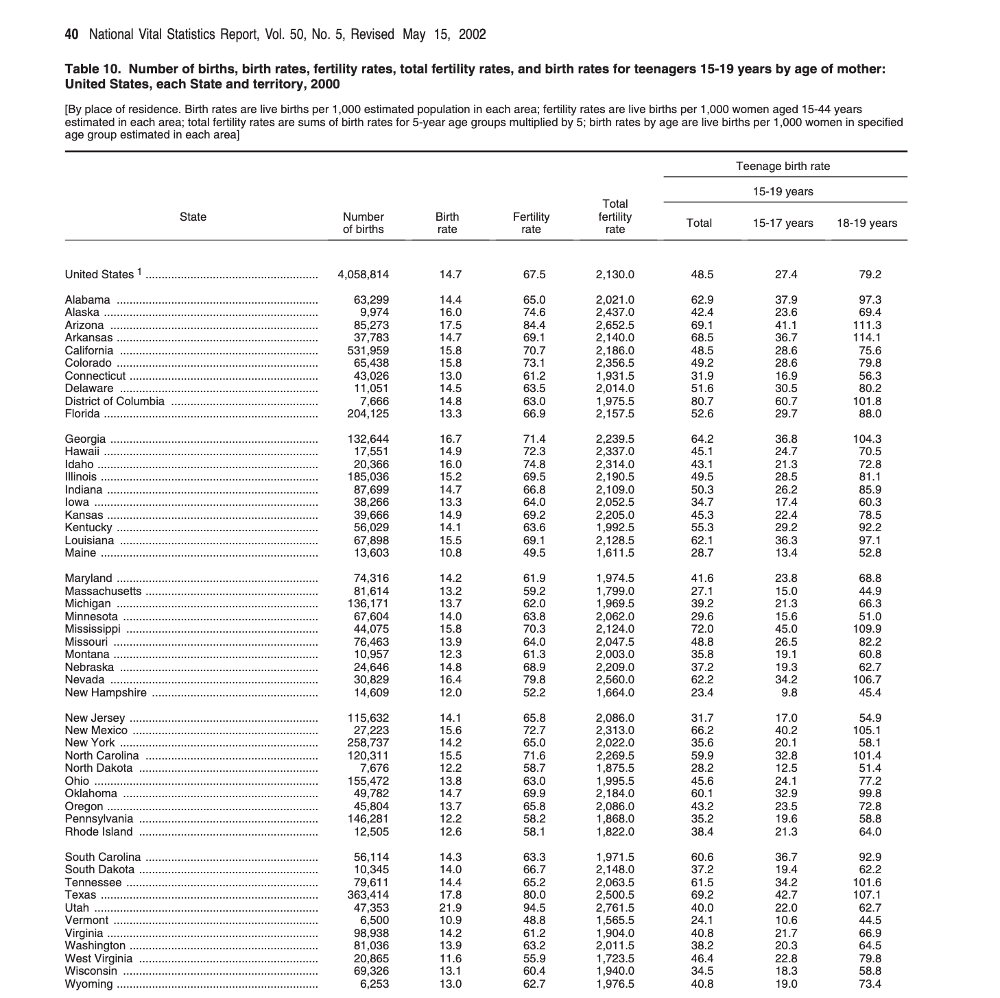
PDF에서 데이터를 가져올 때 첫 번째 단계는 결국 원하는 것을 스케치하는 것입니다. PDF는 일반적으로 상당한 양의 정보를 포함하므로 필요한 것이 무엇인지 명확히 해야 합니다. 이것은 집중력을 유지하고 범위 확장을 방지하는 데 도움이 되지만, 데이터 검사를 생각할 때도 유용합니다. 우리는 말 그대로 종이에 우리가 생각하는 것을 적습니다. 이 경우, 필요한 것은 주, 연도 및 총 출산율(TFR)에 대한 열이 있는 표입니다(그림 fig-tfrdesired).
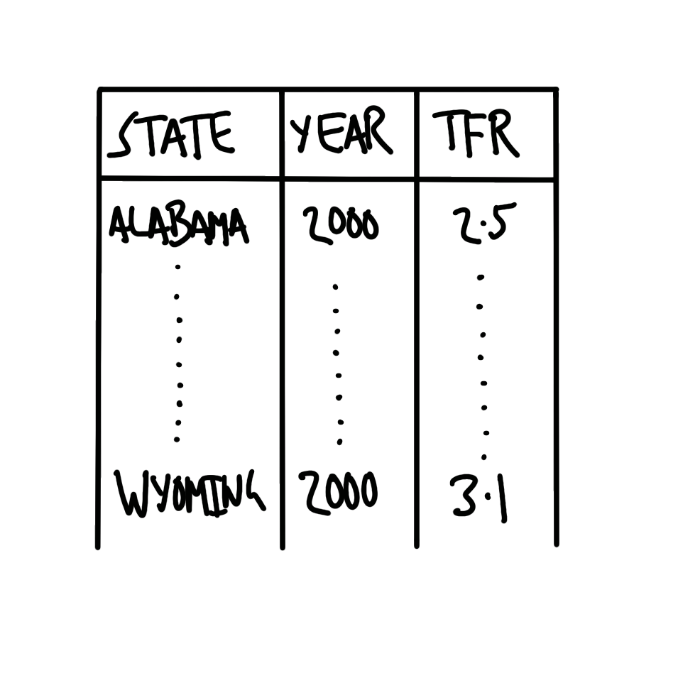
우리는 이 PDF의 특정 표에 있는 특정 열에 관심이 있습니다. 불행히도, 들어오는 것에 대해 마법 같은 것은 없습니다. 이 첫 번째 단계는 온라인에서 PDF를 찾고, 각 링크를 파악하고, 관심 있는 페이지와 열 이름을 검색하는 것을 요구합니다. 우리는 필요한 세부 정보가 포함된 CSV를 구축했으며 이를 읽어들일 수 있습니다.
summary_tfr_dataset <- read_csv(
paste0("https://raw.githubusercontent.com/RohanAlexander/",
"telling_stories/main/inputs/tfr_tables_info.csv")
)| 연도 | 페이지 | 표 | 열 | URL |
|---|---|---|---|---|
| 2000 | 40 | 10 | Total fertility rate | https://www.cdc.gov/nchs/data/nvsr/nvsr50/nvsr50_05.pdf |
먼저 download.file()를 사용하여 PDF를 다운로드하고 저장합니다.
download.file(
url = summary_tfr_dataset$url[1],
destfile = "year_2000.pdf"
)그런 다음 pdftools의 pdf_text()를 사용하여 PDF를 문자 벡터로 읽어들입니다. 그리고 익숙한 동사를 사용할 수 있도록 티블로 변환합니다.
dhs_2000 <- pdf_text("year_2000.pdf")dhs_2000_tibble <- tibble(raw_data = dhs_2000)
head(dhs_2000_tibble)# A tibble: 6 × 1
raw_data
<chr>
1 "Volume 50, Number 5 …
2 "2 National Vital Statistics Report, Vol. 50, No. 5, February 12, 2002\n\n\…
3 " …
4 "4 National Vital Statistics Report, Vol. 50, No. 5, February 12, 2002\n\n\…
5 " …
6 "6 National Vital Statistics Report, Vol. 50, No. 5, February 12, 2002\n\n …관심 있는 페이지를 가져옵니다(각 페이지는 문자 벡터의 요소이므로 티블의 행입니다).
dhs_2000_relevant_page <-
dhs_2000_tibble |>
slice(summary_tfr_dataset$page[1])
head(dhs_2000_relevant_page)# A tibble: 1 × 1
raw_data
<chr>
1 "40 National Vital Statistics Report, Vol. 50, No. 5, Revised May 15, 20022\n…행을 분리하고 tidyr의 separate_rows()를 사용하고 싶습니다. 이는 핵심 tidyverse의 일부입니다.
dhs_2000_separate_rows <-
dhs_2000_relevant_page |>
separate_rows(raw_data, sep = "\\n", convert = FALSE)
head(dhs_2000_separate_rows)# A tibble: 6 × 1
raw_data
<chr>
1 "40 National Vital Statistics Report, Vol. 50, No. 5, Revised May 15, 20022"
2 ""
3 "Table 10. Number of births, birth rates, fertility rates, total fertility ra…
4 "United States, each State and territory, 2000"
5 "[By place of residence. Birth rates are live births per 1,000 estimated popu…
6 "estimated in each area; total fertility rates are sums of birth rates for 5-…사용할 수 있는 패턴을 검색하고 있습니다. 내용의 처음 10줄을 살펴보겠습니다(페이지 상단의 제목 및 페이지 번호와 같은 측면은 무시합니다).
dhs_2000_separate_rows[13:22, ] |>
mutate(raw_data = str_remove(raw_data, "\\.{40}"))# A tibble: 10 × 1
raw_data
<chr>
1 " State …
2 " …
3 " …
4 ""
5 ""
6 "United States 1 .............. 4,058,814 14.7 67.5 2,1…
7 ""
8 "Alabama ....................... 63,299 14.4 65.0 2,0…
9 "Alaska ........................... 9,974 16.0 74.6 2,4…
10 "Arizona ......................... 85,273 17.5 84.4 2,6…이제 한 줄만 살펴보겠습니다.
dhs_2000_separate_rows[20, ] |>
mutate(raw_data = str_remove(raw_data, "\\.{40}"))# A tibble: 1 × 1
raw_data
<chr>
1 Alabama ....................... 63,299 14.4 65.0 2,021…이것보다 더 좋을 수는 없습니다.
- 주와 데이터를 구분하는 점이 있습니다.
- 각 열 사이에 공백이 있습니다.
이제 이것을 열로 분리할 수 있습니다. 먼저, 적어도 두 개의 점이 있는 경우에 일치시키고 싶습니다(점이 특수 문자이므로 이스케이프해야 한다는 점을 기억하십시오).
dhs_2000_separate_columns <-
dhs_2000_separate_rows |>
separate(
col = raw_data,
into = c("state", "data"),
sep = "\\.{2,}",
remove = FALSE,
fill = "right"
)
dhs_2000_separate_columns[18:28, ] |>
select(state, data)# A tibble: 11 × 2
state data
<chr> <chr>
1 "United States 1 " " 4,058,814 14.7 67.5 2,130.0 …
2 "" <NA>
3 "Alabama " " 63,299 14.4 65.0 2,021.0 …
4 "Alaska " " 9,974 16.0 74.6 2,437.0 …
5 "Arizona " " 85,273 17.5 84.4 2,652.5 …
6 "Arkansas " " 37,783 14.7 69.1 2,140.0 …
7 "California " " 531,959 15.8 70.7 2,186.0 …
8 "Colorado " " 65,438 15.8 73.1 2,356.5 …
9 "Connecticut " " 43,026 13.0 61.2 1,931.5 …
10 "Delaware " " 11,051 14.5 63.5 2,014.0 …
11 "District of Columbia " " 7,666 14.8 63.0 1,975.…그런 다음 공백을 기준으로 데이터를 분리합니다. 공백 수가 일치하지 않으므로 먼저 stringr의 str_squish()를 사용하여 두 개 이상의 공백을 하나로 압축합니다.
dhs_2000_separate_data <-
dhs_2000_separate_columns |>
mutate(data = str_squish(data)) |>
separate(
col = data,
into = c(
"number_of_births",
"birth_rate",
"fertility_rate",
"TFR",
"teen_births_all",
"teen_births_15_17",
"teen_births_18_19"
),
sep = "\\s",
remove = FALSE
)
dhs_2000_separate_data[18:28, ] |>
select(-raw_data, -data)# A tibble: 11 × 8
state number_of_births birth_rate fertility_rate TFR teen_births_all
<chr> <chr> <chr> <chr> <chr> <chr>
1 "United Sta… 4,058,814 14.7 67.5 2,13… 48.5
2 "" <NA> <NA> <NA> <NA> <NA>
3 "Alabama " 63,299 14.4 65.0 2,02… 62.9
4 "Alaska " 9,974 16.0 74.6 2,43… 42.4
5 "Arizona " 85,273 17.5 84.4 2,65… 69.1
6 "Arkansas " 37,783 14.7 69.1 2,14… 68.5
7 "California… 531,959 15.8 70.7 2,18… 48.5
8 "Colorado " 65,438 15.8 73.1 2,35… 49.2
9 "Connecticu… 43,026 13.0 61.2 1,93… 31.9
10 "Delaware " 11,051 14.5 63.5 2,01… 51.6
11 "District o… 7,666 14.8 63.0 1,97… 80.7
# ℹ 2 more variables: teen_births_15_17 <chr>, teen_births_18_19 <chr>이 모든 것이 꽤 좋아 보입니다. 남은 것은 정리하는 것뿐입니다.
dhs_2000_cleaned <-
dhs_2000_separate_data |>
select(state, TFR) |>
slice(18:74) |>
drop_na() |>
mutate(
TFR = str_remove_all(TFR, ","),
TFR = as.numeric(TFR),
state = str_trim(state),
state = if_else(state == "United States 1", "Total", state)
)그리고 모든 주가 포함되었는지와 같은 몇 가지 검사를 실행합니다.
all(state.name %in% dhs_2000_cleaned$state)[1] TRUE그리고 완료되었습니다(표 tbl-tfrforthewin). TFR이 미국 주별로 상당히 넓은 분포를 보임을 알 수 있습니다(그림 fig-smalldhsexample). 유타가 가장 높고 버몬트가 가장 낮습니다.
dhs_2000_cleaned |>
slice(1:10) |>
tt() |>
style_tt(j = 1:2, align = "lr") |>
format_tt(digits = 0, num_mark_big = ",", num_fmt = "decimal") |>
setNames(c("주", "TFR"))| 주 | TFR |
|---|---|
| Total | 2,130 |
| Alabama | 2,021 |
| Alaska | 2,437 |
| Arizona | 2,652 |
| Arkansas | 2,140 |
| California | 2,186 |
| Colorado | 2,356 |
| Connecticut | 1,932 |
| Delaware | 2,014 |
| District of Columbia | 1,976 |
dhs_2000_cleaned |>
filter(state != "Total") |>
ggplot(aes(x = TFR, y = fct_reorder(state, TFR))) +
geom_point() +
theme_classic() +
labs(y = "주", x = "총 출산율")
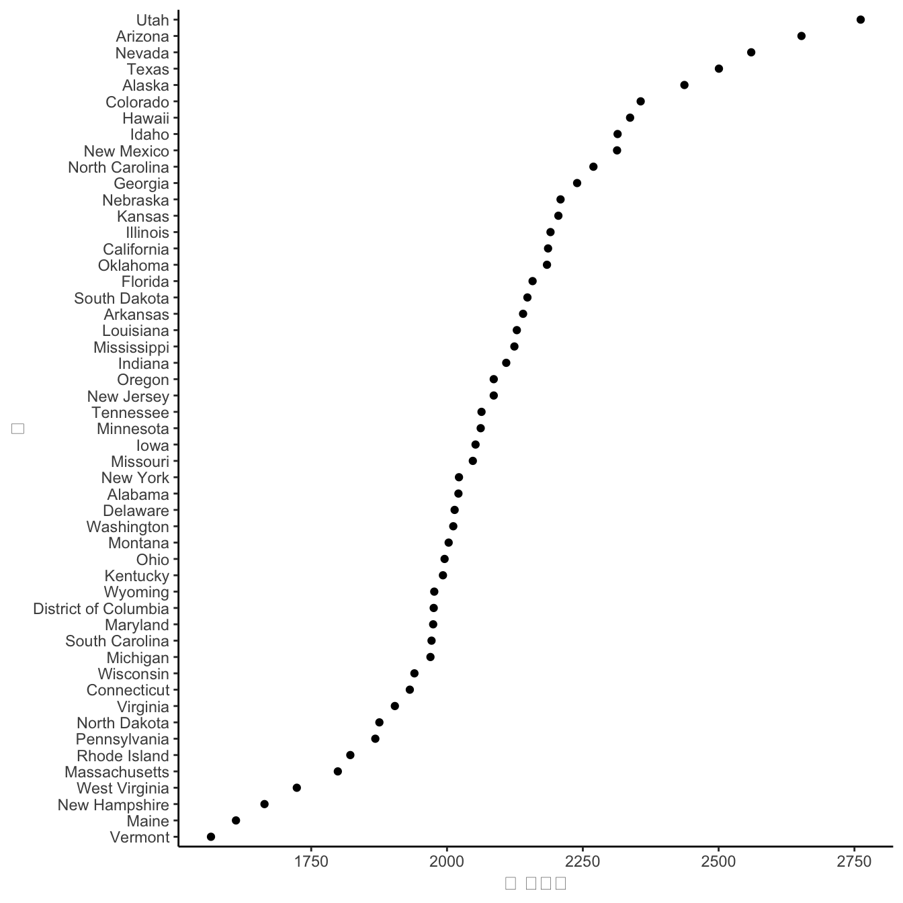
(kieransparsing은?) 다른 맥락에서 이 접근 방식을 사용하는 또 다른 예를 제공합니다.
7.4.3 광학 문자 인식
위의 모든 내용은 이미 “디지털화된” PDF를 가지고 있다는 전제하에 이루어졌습니다. 그러나 스캔 결과와 같이 이미지로 구성된 경우는 어떻습니까? 이러한 PDF는 종종 비정형 데이터를 포함합니다. 즉, 데이터가 태그가 지정되지 않거나 정규적인 방식으로 구성되지 않습니다. 광학 문자 인식(OCR)은 텍스트 이미지를 실제 텍스트로 변환하는 프로세스입니다. OCR 전후의 PDF를 인간이 읽는 데 큰 차이가 없을 수 있지만, PDF는 기계가 읽을 수 있게 되어 스크립트를 사용할 수 있게 됩니다(Cheriet 기타 2007). OCR은 1950년대부터 문자 이미지를 파싱하는 데 사용되었으며, 처음에는 수동 접근 방식을 사용했습니다. 수동 접근 방식이 여전히 골드 스탠다드이지만, 비용 효율성 때문에 통계 모델로 대체되었습니다.
이 예시에서는 tesseract를 사용하여 문서를 OCR할 것입니다. 이것은 Tesseract 오픈 소스 OCR 엔진을 감싸는 R 래퍼입니다. Tesseract는 원래 1980년대 HP에서 개발되었으며, 현재는 주로 Google에서 개발하고 있습니다. tesseract를 설치하고 로드한 후 ocr()을 사용할 수 있습니다.
제인 에어의 첫 페이지 스캔으로 예시를 살펴보겠습니다(그림 fig-janescan).
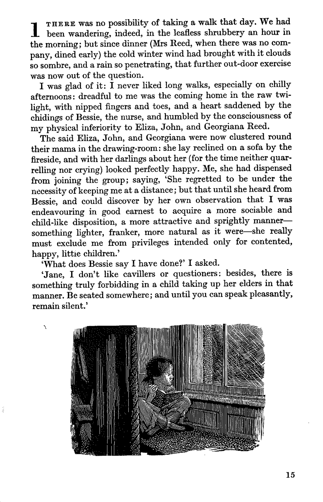
text <- ocr(
here("jane_scan.png"),
engine = tesseract("eng")
)
cat(text)일반적으로 결과는 나쁘지 않습니다. OCR은 유용한 도구이지만 완벽하지 않으며 결과 데이터는 정리 측면에서 추가적인 주의가 필요할 수 있습니다. 예를 들어, 그림 fig-janescan의 OCR 결과에서 수정해야 할 불규칙성을 볼 수 있습니다. 관심 있는 특정 데이터에 초점을 맞추고 대비를 높이는 것과 같은 다양한 옵션이 도움이 될 수 있습니다. 다른 인기 있는 OCR 엔진으로는 Amazon Textract, Google Vision API 및 ABBYY가 있습니다.
7.5 연습 문제
연습
- (계획) 다음 시나리오를 고려하십시오: 다섯 명의 학부생(매트, 애쉬, 재키, 롤, 마이크)이 100일 동안 매일 책에서 일정 페이지 수를 읽습니다. 두 명의 학부생은 커플이므로 그들의 페이지 수는 양의 상관 관계를 가지지만, 다른 모든 학부생은 독립적입니다. 데이터셋이 어떻게 생겼을지 스케치한 다음, 모든 관측치를 보여주기 위해 만들 수 있는 그래프를 스케치하십시오.
- (시뮬레이션) 설명된 시나리오를 더 고려하고 상황을 시뮬레이션하십시오(일부 변수 간의 관계에 유의하십시오). 그런 다음 시뮬레이션된 데이터를 기반으로 5개의 테스트를 작성하십시오.
- (수집) 시나리오와 유사한 실제 데이터를 얻고 시뮬레이션된 테스트를 이 실제 데이터로 업데이트하는 스크립트를 추가하십시오.
- (탐색) 실제 데이터를 사용하여 그래프와 표를 만드십시오.
- (소통) 그래프와 표를 동반할 텍스트를 작성하십시오. 코드를
R파일과 Quarto 문서로 적절하게 분리하십시오. 고품질 GitHub 리포지토리 링크를 제출하십시오.
퀴즈
- 데이터 수집 맥락에서 API란 무엇입니까 (하나 선택)?
- 데이터를 로컬에서 처리하기 위한 표준화된 함수 집합.
- 데이터 구조화를 위한 마크업 언어.
- 웹 브라우저가 HTML 콘텐츠를 렌더링하기 위한 프로토콜.
- 다른 사람이 코드를 사용하여 데이터를 요청할 수 있도록 서버에서 제공하는 인터페이스.
- 데이터 수집을 위해 API를 사용할 때, 다음 중 인증에 사용할 수 있는 것은 무엇입니까 (하나 선택)?
- 요청에 API 키 또는 토큰 제공.
- 브라우저에 저장된 쿠키 사용.
- SSL 확인 비활성화.
- 클라이언트 머신의 hosts 파일 수정.
gh를 사용하여 GitHub API에 접근하는 다음 코드를 고려하십시오.heapsofpapers리포지토리는 언제 생성되었습니까 (하나 선택)?- 2021-02-23
- 2021-03-06
- 2021-05-25
- 2021-04-27
# Tyler Bradley와 Monica Alexander 기반
repos <- gh("/users/RohanAlexander/repos", per_page = 100)
repo_info <- tibble(
name = map_chr(repos, "name"),
created = map_chr(repos, "created_at"),
full_name = map_chr(repos, "full_name"),
)- UN의 데이터 API와 (schmertmannunapi의?) 사용법 소개를 고려하십시오. 아르헨티나의 위치 코드는 32입니다. 다음 코드를 수정하여 1995년 20세 아르헨티나의 단일 연령 출산율이 얼마였는지 확인하십시오 (하나 선택)?
- 147.679
- 172.988
- 204.124
- 128.665
my_indicator <- 68
my_location <- 50
my_startyr <- 1996
my_endyr <- 1999
url <- paste0(
"https://population.un.org/dataportalapi/api/v1",
"/data/indicators/", my_indicator, "/locations/",
my_location, "/start/", my_startyr, "/end/",
my_endyr, "/?format=csv"
)
un_data <- read_delim(file = url, delim = "|", skip = 1)
un_data |>
filter(AgeLabel == 25 & TimeLabel == 1996) |>
select(Value)httr의GET()에 대한 주요 인수는 무엇입니까 (하나 선택)?- “url”
- “website”
- “domain”
- “location”
- 웹 스크래핑에서
robots.txt를 존중하는 목적은 무엇입니까 (하나 선택)?- 스크래핑된 데이터가 정확한지 확인하기 위해.
- 사이트의 크롤링 지침을 따라 웹사이트의 서비스 약관을 위반하지 않기 위해.
- 스크래핑 프로세스 속도를 높이기 위해.
- 인증 자격 증명을 얻기 위해.
- 코드를 파싱할 때 일반적으로 웹사이트의 어떤 기능을 활용합니까 (하나 선택)?
- HTML/CSS 마크업.
- 쿠키.
- 페이스북 비콘.
- 코드 주석.
- 스크래핑을 수행할 때 따라야 할 원칙은 무엇입니까 (모두 선택하십시오)?
- 가능하면 피하십시오.
- 사이트의 지침을 따르십시오.
- 속도를 늦추십시오.
- 도끼가 아닌 메스를 사용하십시오.
- 다음 중 웹 스크래핑을 수행할 때 권장되지 않는 원칙은 무엇입니까 (하나 선택)?
- 웹사이트의 서비스 약관을 준수하십시오.
- 요청 속도를 늦춰 웹사이트 서버에 미치는 영향을 줄이십시오.
- 필요 여부에 관계없이 모든 데이터를 스크래핑하십시오.
- 스크래핑된 페이지를 재게시하지 마십시오.
- 다음 중 정규 표현식의 일부로 사용될 때 마침표와 일치하는 것은 무엇입니까 (힌트: “문자열” 치트 시트 참조) (하나 선택)?
- “.”
- “\.”
- “\\\.”
- 특정 연도에 한 국가의 출생아 수와 같은 인구 통계 데이터에 대해 사용하고 싶은 세 가지 검사는 무엇입니까?
- 다음 중
purrr패키지의 함수는 무엇입니까 (모두 선택하십시오)?map()walk()run()safely()
- 목록의 항목에 대한 HTML 태그는 무엇입니까 (하나 선택)?
libodybem
- “names”라는 열에 “rohan_alexander”라는 텍스트가 있고 밑줄을 기준으로 이름과 성으로 분리하고 싶을 때 어떤 함수를 사용해야 합니까 (하나 선택)?
spacing()slice()separate()text_to_columns()
- OCR(광학 문자 인식)이란 무엇입니까 (하나 선택)?
- 손글씨 노트를 타이핑된 텍스트로 변환하는 프로세스.
- 텍스트 이미지를 기계가 읽을 수 있는 텍스트로 번역하는 방법.
- API에서 구조화된 데이터를 파싱하는 기술.
- 더 빠른 실행을 위해 코드를 최적화하는 방법.
R에서 웹 스크래핑 중 속도 제한을 존중하는 데 유용한, 지정된 시간 동안 실행을 일시 중지하는 데 사용할 수 있는 함수는 무엇입니까 (하나 선택)?sleep()pause()sys.sleep()wait()
- 다음 중 PDF에서 데이터를 추출할 때의 어려움은 무엇입니까 (하나 선택)?
- PDF는 어떤 프로그래밍 언어로도 읽을 수 없습니다.
- PDF는 일관된 인간의 읽기를 위해 설계되었으며, 데이터 추출을 위한 것이 아닙니다.
- PDF는 항상 처리할 수 없는 비정형 데이터를 포함합니다.
- PDF는 암호화되어 있으며 암호 없이는 접근할 수 없습니다.
- 스캔한 문서에 OCR을 수행할 때 텍스트 인식의 정확도에 영향을 미칠 수 있는 일반적인 문제는 무엇입니까 (하나 선택)?
- 이미지의 파일 크기.
- 사용된 프로그래밍 언어.
- 스캔한 이미지의 품질 및 해상도.
- 문서의 페이지 수.
- (cirone에?) 따르면, 다음 중 역사적 데이터로 작업할 때 추론에 대한 일반적인 위협이 아닌 것은 무엇입니까 (하나 선택)?
- 선택 편향.
- 확증 편향.
- 시간 경과.
- 소외된 그룹의 과대 대표.
- (cirone에?) 따르면, 역사적 정치 경제학(및 더 일반적으로)에서 술꾼의 검색 문제란 무엇입니까 (하나 선택)?
- 대표성을 고려하지 않고 가장 쉽게 접근할 수 있는 데이터를 선택하는 것.
- 엘리트 출처에서만 데이터를 검색하는 것.
- 연구를 위해 디지털 아카이브에 과도하게 의존하는 것.
- 현대적 편향으로 인해 역사적 텍스트를 오해하는 것.
- (cirone에?) 따르면, DAG는 어떤 역할을 합니까 (하나 선택)?
- 역사적 데이터에 대한 OCR의 정확도를 향상시킵니다.
- 역사적 출처에서 기계가 읽을 수 있는 텍스트를 생성합니다.
- 연구자들이 인과 관계를 시각화하고 해결하는 데 도움이 됩니다.
- 역사적 아카이브를 구성하기 위한 메타데이터 역할을 합니다.
- (Johnson2021Two에?) 따르면, 미국 인구 조사국의 초기 교도소 데이터 수집의 초점은 무엇이었습니까 (하나 선택)?
- 건강 상태 문서화.
- 선고에서 인종적 차이 조사.
- 사회경제적 배경 및 고용 기록.
- 수감자 수 및 인구 통계 집계.
- (Johnson2021Two에?) 따르면, 지역 사회에서 수집된 교도소 데이터는 주에서 수집된 교도소 데이터와 어떻게 다릅니까 (하나 선택)?
- 지역 사회 데이터는 정부 공무원이 수집합니다.
- 지역 사회 데이터는 경험과 교도소 조건을 강조합니다.
- 주 데이터는 지역 사회 데이터보다 신뢰성이 낮습니다.
- 주 데이터는 지역 사회 데이터보다 신뢰성이 높습니다.
- (Johnson2021Two에?) 따르면, 다음 중 주에서 수집된 데이터의 한계는 무엇입니까 (하나 선택)?
- 주에서 수집된 데이터는 학술 연구보다 신뢰성이 낮습니다.
- 교도소 인구를 과소 대표합니다.
- 이전 데이터 수집의 편향과 가정을 재현할 수 있습니다.
- 비폭력 범죄자에게만 초점을 맞춥니다.
- (Johnson2021Two에?) 따르면, 교도소 데이터 수집을 볼 때 어떤 질문을 해야 합니까 (하나 선택)?
- “데이터 인프라를 누가 왜 구축했는가?”.
- “경제적 요인이 교도소 관리에 어떻게 영향을 미치는가?”.
- “데이터가 공공 정책을 만드는 데 사용되고 있는가?”.
수업 활동
- 시작 폴더를 사용하고 새 리포지토리를 만드십시오. API를 사용하여 오늘 NASA APOD를 가져온 다음 리포지토리의 Quarto 문서에 추가하십시오.
- Spotify API를 사용하여 비욘세 앨범 중 어떤 앨범이 평균 “춤추기 쉬움”이 가장 높은지 확인하십시오.
- 카밀라 카베요가 2016년 12월 피프스 하모니를 탈퇴한 것이 스튜디오 앨범 노래의 valence에 영향을 미쳤는지 여부에 답하기 위한 그래프를 만드십시오.1 다음은 유용한 정리 코드입니다.
fifth_harmony |>
filter(album_name %in% c("Reflection", "7/27 (Deluxe)", "Fifth Harmony")) |>
mutate(album_release_date = ymd(album_release_date)) |>
filter(album_release_date != "2017-10-29") # 본질적으로 중복되는 앨범이 있습니다.- 그림 fig-pmslives와 동등한 것을 캐나다에 대해 만드십시오.
- 논문 검토: (Kish1959를?) 읽고 익숙한 예를 들어 최소 한 페이지의 검토를 작성하십시오.
과제
웹 스크래핑 예시를 다음 중 하나에 대해 다시 수행하십시오: 호주, 캐나다, 인도, 또는 뉴질랜드.
데이터를 계획하고, 수집하고, 정리한 다음, 이를 사용하여 위에서 만든 것과 유사한 표를 만드십시오. 발견한 내용에 대해 몇 단락을 작성하십시오. 그런 다음 데이터 소스, 수집한 내용, 그리고 어떻게 진행했는지에 대해 몇 단락을 작성하십시오. 예상보다 오래 걸린 것은 무엇입니까? 언제 재미있어졌습니까? 다음에 이 작업을 할 때 무엇을 다르게 하시겠습니까? 제출물은 최소 두 페이지 이상이어야 합니다.
Quarto를 사용하고, 적절한 제목, 저자, 날짜, GitHub 리포지토리 링크 및 인용을 포함하십시오. PDF를 제출하십시오.
Alexander, Rohan, 와/과 A Mahfouz. 2021. heapsofpapers: Easily Download Heaps of PDF and CSV Files. https://CRAN.R-project.org/package=heapsofpapers.
Arel-Bundock, Vincent. 2024. tinytable: Simple and Configurable Tables in “HTML”, “LaTeX”, “Markdown”, “Word”, “PNG”, “PDF”, and “Typst” Formats. https://vincentarelbundock.github.io/tinytable/.
Bailey, Rosemary. 2008. Design of comparative experiments. Cambridge: Cambridge University Press. https://doi.org/10.1017/CBO9780511611483.
Brontë, Charlotte. 1847. Jane Eyre. https://www.gutenberg.org/files/1260/1260-h/1260-h.htm.
Bryan, Jenny, 와/과 Hadley Wickham. 2021. gh: GitHub API. https://CRAN.R-project.org/package=gh.
Cheriet, Mohamed, Nawwaf Kharma, Cheng-Lin Liu, 와/과 Ching Suen. 2007. Character Recognition Systems: A Guide for Students and Practitioner. Wiley.
Cirone, Alexandra, 와/과 Arthur Spirling. 2021. “Turning History into Data: Data Collection, Measurement, and Inference in HPE”. Journal of Historical Political Economy 1 (1): 127–54. https://doi.org/10.1561/115.00000005.
Crawford, Kate. 2021. Atlas of AI. 1st ed. New Haven: Yale University Press.
Eisenstein, Michael. 2022. “Need web data? Here’s how to harvest them”. Nature 607: 200–201. https://doi.org/10.1038/d41586-022-01830-9.
Firke, Sam. 2023. janitor: Simple Tools for Examining and Cleaning Dirty Data. https://CRAN.R-project.org/package=janitor.
Grolemund, Garrett, 와/과 Hadley Wickham. 2011. “Dates and Times Made Easy with lubridate”. Journal of Statistical Software 40 (3): 1–25. https://doi.org/10.18637/jss.v040.i03.
Hackett, Robert. 2016. “Researchers Caused an Uproar By Publishing Data From 70,000 OkCupid Users”. Fortune, 5월. https://fortune.com/2016/05/18/okcupid-data-research/.
Johnson, Kaneesha. 2021. “Two Regimes of Prison Data Collection”. Harvard Data Science Review 3 (3). https://doi.org/10.1162/99608f92.72825001.
Luscombe, Alex, Kevin Dick, 와/과 Kevin Walby. 2021. “Algorithmic thinking in the public interest: navigating technical, legal, and ethical hurdles to web scraping in the social sciences”. Quality & Quantity 56 (3): 1–22. https://doi.org/10.1007/s11135-021-01164-0.
Müller, Kirill. 2020. here: A Simpler Way to Find Your Files. https://CRAN.R-project.org/package=here.
Ooms, Jeroen. 2014. “The jsonlite Package: A Practical and Consistent Mapping Between JSON Data and R Objects”. arXiv:1403.2805 [stat.CO]. https://arxiv.org/abs/1403.2805.
———. 2022a. pdftools: Text Extraction, Rendering and Converting of PDF Documents. https://CRAN.R-project.org/package=pdftools.
———. 2022b. tesseract: Open Source OCR Engine. https://CRAN.R-project.org/package=tesseract.
Perepolkin, Dmytro. 2022. polite: Be Nice on the Web. https://CRAN.R-project.org/package=polite.
R Core Team. 2024. R: A Language and Environment for Statistical Computing. Vienna, Austria: R Foundation for Statistical Computing. https://www.R-project.org/.
The Washington Post. 2023. “Fatal Force Database”. https://github.com/washingtonpost/data-police-shootings.
Thompson, Charlie, Daniel Antal, Josiah Parry, Donal Phipps, 와/과 Tom Wolff. 2022. spotifyr: R Wrapper for the “Spotify” Web API. https://CRAN.R-project.org/package=spotifyr.
Thomson-DeVeaux, Amelia, Laura Bronner, 와/과 Damini Sharma. 2021. “Cities Spend Millions On Police Misconduct Every Year. Here’s Why It’s So Difficult to Hold Departments Accountable”. FiveThirtyEight, 2월. https://fivethirtyeight.com/features/police-misconduct-costs-cities-millions-every-year-but-thats-where-the-accountability-ends/.
Wickham, Hadley. 2021. babynames: US Baby Names 1880-2017. https://CRAN.R-project.org/package=babynames.
———. 2022. rvest: Easily Harvest (Scrape) Web Pages. https://CRAN.R-project.org/package=rvest.
———. 2023. httr: Tools for Working with URLs and HTTP. https://CRAN.R-project.org/package=httr.
Wickham, Hadley, Mara Averick, Jenny Bryan, Winston Chang, Lucy D’Agostino McGowan, Romain François, Garrett Grolemund, 기타. 2019. “Welcome to the Tidyverse”. Journal of Open Source Software 4 (43): 1686. https://doi.org/10.21105/joss.01686.
Wickham, Hadley, Jennifer Bryan, 와/과 Malcolm Barrett. 2022. usethis: Automate Package and Project Setup. https://CRAN.R-project.org/package=usethis.
Wickham, Hadley, 와/과 Lionel Henry. 2022. purrr: Functional Programming Tools. https://CRAN.R-project.org/package=purrr.
Wickham, Hadley, Jim Hester, 와/과 Jeroen Ooms. 2021. xml2: Parse XML. https://CRAN.R-project.org/package=xml2.
빨리 끝내는 학생들은 제시카가 2014년 9월 소녀시대를 탈퇴한 것도 비슷하게 살펴보고, 두 상황을 비교해 보십시오.↩︎